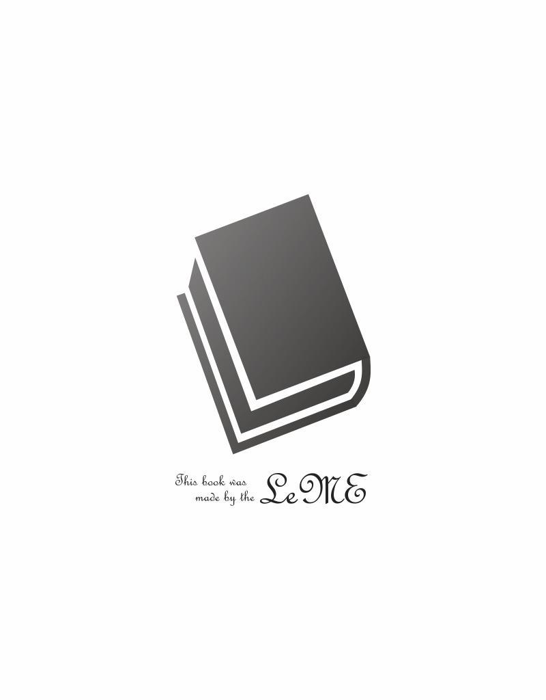

| papa (雑談屋) | |
| 野原 耳子 | |
| 雑談屋 (2019) | |
父さん、と、パパ。
その言葉の意味は同じ。
だけど、父親をパパと呼ぶ時、
振り下ろした竹刀に鋭い衝撃を感じると同時に「勝負あり！」と鋭く告げる声が聞こえた。途端、周囲からわぁっと歓声が上がる。竹刀を振り下ろした体勢のまま、高臣は荒く息をついた。面越しに、対戦相手の悔しそうな表情がわずかに垣間見える。対戦相手の背後に見える、決勝戦相手の高校の生徒達も皆がっくりと肩を落としていた。
試合開始位置と同じ場所に戻り、
「さすが主将、すげぇっす！」
「決勝戦であの落ち着きよう、マジで半端ないです！」
「信じらんねぇ、県大会優勝ですよ！」
口々に告げられる興奮の声を聞きながら、高臣は面を脱いだ。途端、ぽたぽたと額から滝のように汗が落ちていく。汗を拭うこともせず、高臣は労うように後輩たちの肩をぽんぽんと叩いた。
「あぁ、皆の頑張りのおかげだな」
そう言って笑みを浮かべると、後輩たちが一斉に涙ぐんだ。視線を巡らせると、副主将の水無瀬までかすかに目を潤ませているのが見えた。
「ほら、まだ終わってないぞ。並んで挨拶しよう」
促すように背を押すと、後輩たちは慌てたように体育館の真ん中へと駆けていった。決勝戦の対戦校は、既に中央に整列している。
その後ろを追いながら、高臣は肩越しに観覧席を振り仰いだ。観覧席の一番前に、求めていた顔が見える。ノンフレームの眼鏡を掛けた、柔らかで繊細な顔立ちをした男性だ。笑うと目が糸のように細くなって、目尻にかすかに笑い皺が浮かぶ。
「父さん」
咥内で睦言のように呟いて、片腕を大きく振り上げる。父は高臣の姿を見止めると、笑みを浮かべて片手を小さく上げた。手を左右に振りながら、父が「たかおみ」と淡く呟いてくれているのが唇の動きでわかる。
その仕草に、ぐんと身体の熱が上がっていくのが分かった。血液がくつくつと音を立てて沸騰していくような感覚に、知らず粘着いた唾液が湧いてくる。乾いた下唇を舌先で舐めると、高臣の高揚に気付いたように父が苦笑いを浮かべた。
父が体育館の中央を指さす。指さす方向へと視線を向けた瞬間、水無瀬の声が聞こえた。
「
高臣を呼ぶ声に、仕方なく体育館中央へと向かって走る。それでも、皮膚の下を這い回るような興奮はなかなか消えそうになかった。
＊＊＊
閉会式を終えて会場を出たところで、ようやく父の姿が見えた。他の保護者たちに混じって、にこにこと笑みを浮かべている。
「父さん！」
今度は大きな声で呼ぶ。駆け寄ると、父は殊更優しげな笑みを浮かべた。
「高臣、優勝おめでとう。よく頑張ったなぁ」
柔らかな声で告げられて、大きく骨張った手のひらでくしゃりと頭を撫でられる。途端、胸の奥から誇らしさとも歓喜ともつかない感情が波のように込み上げてきた。
「来てくれてありがとう。仕事抜けて大丈夫だった？」
「有給が余ってたから平気だよ。上からも下からも休めってせっつかれてたから、丁度良かった」
ほとんど同じ高さにある高臣の目を覗き込んで、それに、と父は続けた。
「息子の晴れ舞台を見に行かない親なんていないだろ。格好良かったよ、高臣」
そんな優しいことを言ってくれるから、余計に胸がきゅんきゅんとときめきそうになる。今すぐ抱きつきたい衝動を堪えていると、不意に背中にどんっと衝撃が走った。
「主将！ 焼肉食いに行きましょうよ！ 信じらんねぇことに、阿部ちゃんのおごりっすよ！」
後輩の稲葉が背中にしがみついている。振り返ると、部活仲間たちが立っていた。
「信じらんねぇとか言うな。お前だけは自腹にするぞ」
ジャージ姿の阿部が苦々しい口調で言い放つと、稲葉は「うえぇ!? 」と悲鳴じみた声を上げた。
阿部は二十代後半の教師で、剣道部の顧問をしている男だ。口は悪いが、とっつきやすい性格をしているため生徒から『阿部ちゃん』と呼ばれて慕われている。阿部がくせっ毛をぐしゃぐしゃと片手で掻き乱しながら、高臣を見やる。
「あー、どうする日高」
「ありがとうございます。でも、俺は大丈夫です。父と一緒に帰るので、阿部先生は皆と一緒に楽しんできて下さい」
阿部へと礼をしながら、断りの文句を述べる。稲葉が再び「えぇええっ！」と驚愕の声を漏らした。
「主将、いいんすか!? タダ飯っすよ!? 阿部ちゃんがおごることなんてもう二度とないっすよ!? 」
歯に絹着せぬ稲葉の台詞に、阿部が稲葉の後頭部をスパンッと平手で叩く。高臣は苦笑いを浮かべながら、小さく頷きを返した。
「一緒に行けなくて悪いな。今日は疲れたから早く家に帰りたいんだ。俺の分まで、いっぱい食ってこいよ」
そう言って、高臣よりも低い位置にある稲葉の頭をぽんと叩く。「じゃあ、お先」と皆に声を掛けて、少し離れた位置に立っていた父の元へと向かって走る。隣に並んだ瞬間、父が心配するように声を掛けてきた。
「皆と一緒に行かなくて良かったの？」
その言葉に、高臣は拗ねたような視線を向けた。
「父さんがそんなこと言うの？」
じわりと熱を孕み始めた眼差しを据えると、父は把握したように肩を揺らして笑った。父の手のひらが高臣の肩を軽く叩く。父の細い指先が汗ばんだ高臣のうなじを撫でた瞬間、皮膚にぶるりと震えが走った。
「ずっと我慢してたもんなぁ」
そう囁く声にも、淡く淫靡さがまとわりついているように聞こえる。は、と短く息を吐き出して、父の上着の裾を隠れて握り締めた。
「はやく、うちに帰りたい」
ほとんど泣き言のような声で呟くと、父は眼鏡の奥の目を細めて、横目で高臣を見やった。目の奥に滲む冷徹な色に、指先からすっと温度が消えていく。それなのに、体内は噴火直前のように煮え立っていた。
父は時々、こんな目で高臣をみる。被験体を観察するような、淫乱と唾を吐きかけるような、それでいて視線だけで皮膚下を乱暴にまさぐるような、恐ろしいのに情欲を煽られる目だ。
高臣の怯えと紙一重の高揚に気付いたのか、父が口元にうっそりと笑みを滲ませる。
「いい子だね、高臣」
優しく告げられる言葉に、期待を感じて眼球が湿り気を帯びた。
＊＊＊
家の玄関扉を閉めた瞬間、飢えた獣のように飛びかかった。玄関の壁に父の背を押しつけて、唇へとむしゃぶりつく。歯の隙間から舌を強引に突っ込むと、父の笑い声が舌越しに伝わってきた。
「ふ、ふふ」
がっつきすぎ、だと言わんばかりの笑い声を無視して、柔らかい咥内をめちゃくちゃに舌で荒らす。べちゃべちゃと音を立てて唾液を掻き回しながら、父の舌を絡め取る。薄くて生温かい舌の感触に、うっとりと息が漏れた。
腰骨を左右から揉まれる感触に、ぞくりと背筋が震えて唇が離れた。途端、至近距離で父と目があった。
「こら、高臣。すこし落ち着きなさい」
「パパ、パパ、やだ。したい。はやく、はやく欲しい」
たしなめる言葉に、駄々をこねるように甘えた声を上げる。ぐりぐりと胸に頬を押しつけると、仕方ないなぁと言わんばかりの淡い溜息が聞こえてきた。
「ここでするの？」
「うん、ここでする。ここがいい。我慢できない」
「たった一週間で我慢の限界なの？」
「だ、だって、だって......」
呆れたような父の言葉に、思わず声が掠れる。大事な試合前ということで、一週間も禁欲していたのだ。たった一週間だけども、高臣にはとっくの前から限界だった。ふるふると肩を震わせていると、父が耳元に顔を寄せてきた。
「高臣は可愛いね」
顔を上げるよりも早く、視界がぐるりと反転した。上がりに敷かれていた絨毯の上に押し倒されて、性急な仕草で学生服のズボンと下着を一緒くたに引き抜かれる。ほとんど乱暴ともいえる強引さで、咥内に二本の指が突っ込まれた。
「ほら、舐めて」
にっこりと笑って命じる言葉に、目が興奮に潤んだ。咥内の指に唾液を絡めるようにして舌を這わせる。じゅるじゅると音を立てて指を啜っていると、指が引き抜かれた。指はすぐさま尻の狭間へと這わされた。窄まった縁を濡れた指でくにくにと弄られて、期待に太股が震えた。
「パパ、おねがい、はやく挿れて」
掠れた声で強請ると、父はその優しげな顔立ちに皮肉げな笑みを滲ませた。窄まりへとグッと中指が潜り込んでくる。長い指がずるずると体内を突き進んでいく異物感に、下腹がピクピクと跳ねた。
「あ、ぁあー......」
呼吸と一緒に断続的に声が漏れ出る。根本まで中指が埋まると、中の強ばりを確かめるようにぐにぐにと鉤状に指が曲げられた。その刺激に、背筋が丸まる。
「一週間しなかっただけなのに、中がすごく狭くなってるね」
「あ、ごめんなさい、ぃ」
涙声で謝ると、目蓋にキスが落とされた。
「違うよ、初めてした時みたいで興奮するってこと」
囁かれる言葉に、心臓がとろけるような喜びを感じた。口元にふにゃふにゃとした笑みを浮かべて、父を見上げる。
「うれしい......。初めてしたときのこと、覚えてくれてるんだ......」
「覚えてるに決まってるだろ。吃驚したよ、目が覚めたら高臣が上に乗っかって腰振ってるんだもんなぁ」
くすくすと潜めるような笑い声が聞こえてくる。中で指が抜き挿しされる感覚にあえやかな吐息を漏らしながら、高臣は反論するように声を上げた。
「だ、だって、俺、パパがすきで、すきで......」
「そうだね。パパも高臣が大好きだよ」
柔らかく囁かれる言葉に、胸の奥が温かくなっていく。グッと押し込まれるようにして二本目の指が潜り込んでくる。高臣は両足を大きく左右に開いて、太股の間にある父の腰へと手を伸ばした。ズボンのベルトを外して、開いたジッパーの間へと両手を捻り込む。硬い感触を感じた瞬間、高臣は唇に震えるような笑みを浮かべていた。
「やらしい顔」
揶揄するように父が呟くのを聞き流しながら、下着の上から陰茎を撫でさする。悪戯するように濡れた先端部分を指先で強く押すと、父が、んっ、と呻くような声を上げた。その反応に気を良くして、片手で下着越しに陰嚢を揉み込みながら、もう片方の手で先端のカリ部分をくりくりと弄くる。
「パパ、きもちいい？ おれの手、きもちいぃ？」
誉めて貰いたくて甘えた声を上げると、父は快感を堪えるように眉根を寄せたまま高臣を見下ろしてきた。
「うん、気持ちいいよ。上手だね、高臣」
優しい言葉に、満面の笑みが浮かんでしまう。だが、体内に入ったままの指先が痼りをグリッと押しつぶした衝撃に、ヒッとしゃっくりみたいな声があがってしまった。二本の指が痼りを挟んでグリグリと潰しては、指の腹で優しく撫でてくる壮絶な快感に、大きく開いた両足が空中を蹴り飛ばす。
「やッ、やぁ！ ぱぱ、やだッ！ やだぁあ、イッちゃうっ！ いっちゃうからぁあっ......！」
叫ぶ唇を、父のもう片方の手のひらに塞がれる。父がシーッと子供をたしなめるように息を漏らした。
「あんまり叫ぶと、外に聞こえちゃうよ」
咽喉を大きく上下させながら、こくこくと小刻みに頷く。すると、父はにっこりと笑みを浮かべてから、ゆっくりと手を退けた。再び体内の指が動き出す。二本の指が前後に動く度に、咽喉から泣き声のような掠れた嬌声が漏れた。
「......っひぅ、うヴ～......！ パパ、もぉ、おねがい、おねがい、パパの挿れて......ッ！」
「まだ二本だよ。ほぐし足りないんじゃないかな？」
「いぃから......！ パパの、でイきた、いっ......！ これっで、おく、ぐちゃぐちゃ、されたぃッ......！」
押し殺した声を漏らして、涙目で父を見上げる。下着の中から陰茎を引っ張り出して、浮かび上がった血管をぐしぐしと両手で擦る。すると、先端からぷくりと透明な液体が滲むのが見えた。
直に見る父の性器の形に、また目眩のような興奮を覚えてしまう。父の性器は、高臣の性器よりも一回り以上大きく、カリも大きく張り出していた。赤黒く反り返っていて、浮かび上がった筋も太くて針金のように硬い。これで粘膜を擦られる度に、内臓まで掘削されるような衝撃が走るのだ。見た目は優しげな男なのに、服の下にこんな凶暴な性器を持っているだなんて堪らない。
咽喉を鳴らして唾液を飲み込むと、高臣の興奮を悟ったように父が笑った。
「声、出さないようにね？」
囁かれる言葉に頷いて、高臣は口元を両手で押さえた。父が挿入しやすいように、折り曲げた両足を限界まで左右に開く。父は高臣の内股を片手で押さえて、もう片方の手で陰茎の先端をぐっと窄まりへと押しつけた。ぐにゅ、と先端が触れる感触に鳥肌が立つ。直後、体内に陰茎がぐぐっと押し込まれる衝撃に、背筋が反り返った。
「ん、んんん、んんーー......!! 」
火照った粘膜を押し広げながら、硬い杭が奥まで飲み込まれていく。中程まで入ると、父は高臣の腰骨を掴んで、強引に奥までねじ込んできた。
「っヴぐぅ、んぅんッ......！」
父の張り出した亀頭が粘膜をゴリゴリと擦りながら進んでいくのが分かる。身体の内側を父の陰茎の形に無理矢理押し広げられていくのを感じて、喜びで涙が溢れ出した。
「ぁ、んんッ......んっんっ、んヴぅー......」
深くまで突き刺さっていく杭に、無意識にうっとりとした声が漏れ出る。浮かび上がった太い裏筋や血管を、粘膜が嬉しげにしゃぶっているのを感じた。
ガツッと音を立てて、父の腰と引き締まった高臣の尻とがぶつかる。瞬間、目の奥でバチバチと火花が散ったような気がした。下腹部で快感が弾けて、ガクガクと腰が上下に跳ねる。
「挿れられただけでイッちゃったね」
ぼんやりと霞んだ思考に、父の穏やかな声が聞こえてくる。か細い呼吸を漏らしながら下半身へと視線を落とすと、黒い学ランに白い液体が散っているのが見えた。父が白濁を指先で掬いながら、困ったように微笑む。
「制服汚れちゃったなぁ」
「よ、ごれてもいい......からぁ......」
譫言のように呟きながら、両手で父の腰を掴む。そのまま、ぐいと引き寄せると、根本まで入っていた陰茎の先端が更に奥をグリッと刺激するのを感じた。はぁっ、と息と声を漏らしながら、父の腰を掴んだまま自身の尻を円を描くように動かす。
「あ、あぁ、ん......パパの、きもちぃ......」
両足をがに股に開いた浅ましい姿勢で、高臣は父の陰茎を体内で舐めしゃぶった。へそ辺りまで亀頭が侵入しているのを感じて、圧倒的な存在感に下腹がひくひくと震える。
「高臣、パパのでオナニーしてるみたいだな。そのまま自分で動いてイきたい？」
訊ねられる言葉に、ふっとぼやけていた思考が戻った。父の腰を掴んでいた手を離して、その腕を父の首へと回す。
「やだ......パパに、動いてほしい......」
そう囁いた瞬間、父の口元に薄い笑みが滲んだ。
「どう動いて欲しい？ ゆっくり動く？ それとも激しく？ 浅いところ？ 深いところ？」
言葉で辱められていると思う。だけど、それが堪らない。近所でも優しくて良い父親だと評判な父が、息子を身体でも言葉でも陵辱しているなんて、一体誰が想像するだろう。
「......ぜんぶが、いい」
恥じらいに視線を伏せながら、それでも貪欲な言葉を吐き出す。途端、ぐんっと伸び上がるように腰を深く押し付けられた。
「ひ、ィんッ！」
腰骨を掴まれたまま、先端で奥をぐりぐりと抉られる。ねっちりと奥をこねられて粘膜を柔らかくほぐされていく感覚に、下腹が痙攣したように震えた。
「あ、ぁ......奥、おく、すごいぃ......」
声がとろける。先ほど一度イッたおかげか、今はゆっくりと浸るような快楽が心地よかった。脳みその芯がじんわりと溶けていくような浮遊感すらある。
「しばらくしてなかったから、奥のほうが少し固くなってるね。今ほぐしてあげるから」
奥を連続してコンコンと先端で叩かれると、咽喉の奥からしゃっくりのような声が溢れた。そのまま、ぐりゅっと陰茎を根本から回されるともう堪らない。
「っや、ぱぱの、パパのがぁ......」
「パパのが？」
「......おれの中の......行きどまり、ぐりぐり、してる......」
自分の言葉の淫猥さに目が潤む。涙目で見上げると、父は愉しげに口角を吊り上げた。
「それは、して欲しいってこと？」
その問い掛けに応える間もなく、次の瞬間、一気に奥をガツガツと乱暴に突かれ始めた。根本まで挿れたものを、それでも奥へねじ込むように突き上げられる。奥の更に行き止まりを巨大な亀頭にぐぽぐぽと拓かれて、堪え切れず悲鳴があがりそうになった。
「ヒぃぃいッっつ、......ッんんんんんッ～～!! 」
絶叫を漏らしかけた口を、父の唇で強引に塞がれる。どっしりと圧し掛かられたまま、全体重を掛けるようにして奥の行き止まりを陵辱された。結腸まで犯し尽くされる壮絶な快感に、宙に浮かんだ爪先がビクビクと痙攣して止まらない。
「ふ、ぶっ......ぅヴぅぅうんんぅー......!! 」
あまりの責めに眼球が裏返りそうになった頃、ようやく結腸責めが止まった。解放された唇から、だらだらと締りなく唾液が零れ落ちる。下顎まで唾液で汚したまま、高臣は定まらない視線で父を見上げた。
「高臣、またイッちゃったの？」
含み笑いを漏らしながら、父が高臣の陰茎へと手を伸ばす。我慢汁と精液にまみれた陰茎は、締まりの悪い蛇口のようにだらだらと精液を垂れ流していた。精液が漏れっぱなしのまま、止まらない。
「女の子みたいにイキっぱなしになってるじゃないか。そんなに奥を犯されるのが好き？」
「......す、きぃ」
口元が勝手にへらへらと笑みを浮かべる。緩んだ笑みを浮かべたまま、高臣は父の陰茎を咥え込んだ中をきゅうきゅうと強請るように締め付けた。
「......パパ、......もっと......めちゃくちゃ、にして......」
羞恥を堪えながら、どこまでも強欲に強請る。父の唇が笑みを浮かべた次の瞬間、ぐんっと膝裏を胸元まで抱え上げられた。持ち上げられた尻に、半ばまで引き抜かれた父の陰茎がぐぼんと濁った音を立てて一気に突き込まれる。
「っア、ぁあんッ!! 」
咄嗟のことで声が押さえられなかった。慌てて両手で口元を覆ったと同時に、激しい律動が開始される。膝裏をキツく押さえられたまま、ぐぽぐぽっと粘着いた音を立てて、先端まで引き抜かれた陰茎が根本まで突っ込まれる。その度に前立腺が滅茶苦茶に擦られて、激しい快感に脳髄が焼かれた。
「んッ！ んぶっぅ！ んぐゥッ、んんん～～......！」
涙で濡れた視界に、自身の尻に父の陰茎が出入りしている様が映る。赤黒く長大なそれが粘液の糸を引きながら出たり入ったりを繰り返している光景は、ひどく卑猥で醜悪で。それなのに、それが父のものだと思うだけで、はちきれそうなほどの喜びを感じた。
パパ、パパ、と胸の奥で叫ぶ。すき、だいすき、愛してる。俺のパパだ。俺だけのパパだ。
その声は聞こえてないはずなのに、父は涙と鼻水でぐちゃぐちゃになった高臣の顔を見て、淡く微笑んだ。
「高臣、愛してるよ」
応えてくれる声に、目の前が真っ白になるくらいの愉悦が込み上げた。腰が震えて、先ほどからイキっぱなしだった陰茎から再び白濁が吐き出される。びゅくびゅくと腹の上に吐き出される度に、父を咥え込んだ粘膜が物欲しげに収縮するのを感じた。強弱をつけて陰茎をしゃぶられる感覚に、父が息を詰める。
「はっ、ぁ......」
色っぽい息と共に、内臓に熱いものが叩きつけられるのを感じた。体内の奥深くを、父の精液で汚されている。そう思った瞬間、口元に震えるように笑みが浮かんだ。
「ぁ......パパの......でて、る......」
「うん、高臣の奥のところにいっぱい出してるよ」
父の精液は大量だ。一度の射精の量が多くて、中に出されているのがよく分かる。陰茎が中でぶるっと震える度に、奥にビシャッと叩きつけられるのが堪らない。
もっといっぱい出して欲しくて、片手を伸ばして父の睾丸を掴む。手のひらで揉み込むように弄くると、その拍子にドクドクッと大量の精液が腹の奥に押し込まれた。その感触にうっとりとしていると、父に額を小突かれる。
「あんまり悪戯するんじゃないよ」
「だって、ぜんぶ、欲しぃ......」
拗ねたように呟くと、父はまだ硬い陰茎を前後に動かした。ぐちぐちと出されたばかりの精液が粘膜と擦れて粘着いた音を立てる。
「ぁあ、んッ！」
「高臣は一回で終わる気なの？」
耳元に囁かれる言葉に、思わず目が輝く。
「やだ、まだしたい」
含み笑いで囁き返すと、父の甘い眼差しが向けられた。舌を伸ばすと、ちゅっと音を立てて吸ってくれる。深く口付けたまま、緩やかな揺さぶりを楽しむ。いつの間にか、父の性器は硬さと太さを取り戻していた。再開の気配に父の背中にぎゅうっとしがみつくと、ゆっくりと両腕をほどかれた。
「ん、今度はちゃんとベッドでしようか」
「やぁ、パパの抜きたくない......」
「ベッドに行くまで一分もかからないよ」
「でも......」
愚図りながら涙目で父を見上げる。父は一瞬困ったように眉尻を下げた後、高臣の頬に口づけて囁いた。
「もう一回だけだよ」
笑みを浮かべるよりも早く、奥までねじ込まれた陰茎に高臣は歓喜の声を上げた。
＊＊＊
結局、玄関で二回、ベッドで二回、風呂場で一回繋がって、気が付いたら夜になっていた。長丁場の交接のせいで、終わった頃には高臣も父もへとへとに疲れ切っていた。
夜ご飯に、宅配で寿司とラーメンを頼んで、二人で向かい合って食べる。久々に満たされたおかげか、高臣だけでなく父も至極ご機嫌で、和やかな食卓になった。
その間に数回、父の携帯がメールの着信音を鳴らした。父はその度に席を外して、数分後に戻ってくる。きっと部下からのメールなんだろうと思う。
「仕事、忙しい？」
リビングに戻ってきた父へと訊ねる。父は一度考えるように首を傾けた後、いつも通りの穏やかな笑みを浮かべた。
「普通かな。今は特に大きな事件があるわけでもないし」
「そうなの？ でも、昨日女子大生がストーカーに殺されたとかってニュースになってたよ」
「あれはうちの警察署の管轄外だから、今のところは僕の仕事とは関係ないかな」
ふぅん、と小さく相槌を打つ。高臣が座っているソファの隣へと、父が腰を下ろす。
「よっこらしょ」
わざとらしい言葉に、思わず笑いが零れた。ソファに背を押し付けるようにして、小さく笑い声を漏らす。
「ふ、ふふ、おじさんっぽい」
「もうおじさんだよ」
にこにこと笑いながらそんな事を言う。
「まだ三十六じゃない」
「十八に比べたら、三十過ぎは十分おじさんじゃないかな？」
そんな事を言いながら、かすかに窺うような眼差しで高臣を眺めてくる。その眼差しを見返しながら、高臣は微笑んだ。
「百歳のおじいちゃんになっても好き。だいすき。ずっとエッチしたい」
父の肩に頬を擦り寄せながら、甘えるように呟く。途端、父の笑い声が聞こえてきた。
「百歳でエッチは厳しそうだなぁ」
「口でいっぱいしゃぶって、乗っかってあげるから」
「その時は、高臣も八十二歳だよ。上で動いたりなんかしたら、ギックリ腰になっちゃうんじゃないかな」
思わず、笑い声が弾けた。想像するだけで胸が躍る未来だ。
二人して笑い合っていると、ふと電話の着信音が聞こえた。固定電話の方だ。父よりも早くソファから立って、子機へと手を伸ばす。通話ボタンを押すと、覚えのある声が聞こえた。三ヶ月ぶりに聞く声だ。
「あ、母さん？ 久しぶり。あぁ、そう、俺。高臣」
喋り掛けてくる声に相槌を返しながら、ソファへと戻っていく。耳に子機を押し付けたまま、父の太腿に後頭部を乗せるようにして仰向けに寝転がる。
「え、うん、ありがとう。もうニュースになってたんだ。そう、優勝した。うん、そうだよ。父さんが応援に来てくれた。夜は、寿司とラーメン。はは、ごちそうだろ」
会話を続けたまま、視線はじっと頭上の父を見上げた。父は、柔らかな眼差しで高臣を見下ろしてくれる。片手を伸ばすと、そっと父が指を絡めてくれた。指を絡めたまま、唇を動かす。
「うん、平気だって。何にも困ってないし、家も綺麗だし、ご飯も父さんと交代で作ってるしさ」
何気ない口調で、安堵させる言葉を次々と吐き出す。それなのに、会話の終着点は絶対に母の懇願へとたどり着くのだ。電話口の先で、母が「ねぇ、高臣、やっぱり......」と切り出すのを聞きながら、高臣は握り締めた父の手にぎゅっと力を込めた。
「......母さん、だから、俺はそっちの家に行く気はないって何回も言ってるだろ？ 母さんが心配なのは分かるけど、岡本さんだって、涼介も香奈だって、俺がいきなりそっちの家族に混じっても困るだけだよ」
諭すように言葉を漏らす。母の沈んだ声を聞きながら、高臣はもどかしさに奥歯を鈍く噛み締めた。歪んだ頬を父の指先がなだめるように撫でてくれる。それだけで、ささくれだった心が和らぐ。
「とにかく、俺は今の家がすきなんだ。父さんとも仲良くやってるし、ここを離れたくないんだよ。俺のこと気にしてくれて嬉しいけど、本当に大丈夫だからさ」
父の目をじっと見上げる。優しく、高臣を包み込んでくれる眼差し。父から子へと向けられる無条件の愛情と、恋人としての絶対的な愛情。
大丈夫、うん大丈夫だ。父は高臣を愛している。高臣も父を愛している。その事実さえあれば、他には何も必要ない。
「あぁ、うん、わかった。また今度、島路屋のパフェでも食いに行こう。あれ男一人で食いに行くの恥ずかしいんだよ。ふは、は、そりゃ母さんの奢りに決まってんじゃん。俺っていい息子だろ？ え？ あ、分かった。じゃあ、父さんに代わるな」
子機を差し出すと、父は高臣の頬を撫でていた手でそれを受け取った。父の和やかな声が聞こえる。その声音には、離婚した夫婦のギスギスとした雰囲気は感じられない。旧知の友人に語りかけるような、親しみの篭もった口調だった。
仕方がないことだというのに、むくむくと胸の奥から嫉妬心が湧き上がってくる。絡めていた指をほどいて、ソファの下へと降りる。
そのまま父の膝の間に身体を潜り込ませて、高臣は両手を父の股間へと伸ばした。スウェットのズボンをずり下ろして、芯のない陰茎を取り出す。その高臣の動作に、父がわずかに目を見張る。
父の目を見上げたまま、柔らかな陰茎の先端へと高臣は舌を這わせた。ぺちゃっぺちゃっと卑猥な水音が響く。
父は電話を続けたまま、口角を淡く吊り上げた。細められた眼差しには、再び暗い欲望が灯り始めている。その眼差しにぐらりと世界が歪んでいくようなを覚えながら、高臣は甘やかに囁いた。
「パパ......」
目をしばたかせながら喫煙室で煙草を吸っていると、少し背筋が曲がった日高さんが入ってきた。日高さんは手の甲で眼鏡を押し上げて、眠たげに目蓋を擦っている。
「お疲れさまです」
そう声を掛けると、日高さんはようやく橋場の存在に気付いたように視線を向けてきた。眼鏡ごしに柔和な目がぱちりと瞬く。
「あぁ、橋場くん。お疲れさま」
言い切るなり、日高さんは大きな欠伸をこぼした。くあ、と開かれた口から歯並びの良い歯列が覗き見える。その顎周りには薄っすらと無精ひげが生えていた。
「日高さんも徹夜ですか？」
細く紫煙を吐き出しながら問い掛ける。そういう橋場も昨晩は一睡もしていなかったし、更に言えばこの三日間に数えるほどの仮眠しか取っていない。いい加減限界なのか、一時間ほど前から頭のまわりを天使の形をした眠気がピヨピヨと泳ぎ回っているような幻覚に襲われている。
喫煙室のベンチに腰掛けながら、日高さんが胸ポケットからくしゃくしゃになった煙草の箱を取り出す。一本なめらかな動作で火を点けると、大きく紫煙を吐き出して言った。
「まあ、流石にね。他の課のやつもほとんど起きてるし、こんな時に寝てたら顰蹙を買いそうだからさ」
あなたなら誰も何も言わないと思いますよ、と思わず言いそうになった。
最初日高さんを見たときは、こんななよっちい男にマルボウ刑事なんか勤まるのか、と正直思った。それぐらい日高さんの見た目は優男そのものだ。ノンフレームの眼鏡の奥の瞳は柔らかく垂れており、口元にはいつもほんわかとした笑みが浮かんでいる。確か年齢は、橋場よりも六つ年上の三十六歳だったと思うが、その穏和な顔立ちは、ともすれば二十代にも見えた。暴力団相手に恫喝するような仕事ではなく、田舎でのんびりと教師でもやっているのが一番しっくりとくる見目だ。
それなのに、組対部の中で一番恐ろしいのが目の前の男だなんて誰が思うのだろう。
吐き出した紫煙をぼんやりと眺めながら、日高さんが呟く。
「佐久間はまだ口を割らないの？」
佐久間というのは、今回一斉検挙した金月組の若頭の名前だ。先日起こった税理士一家行方不明事件に関与している疑いで、金月組の構成員たちを検挙したのが三日前のことだ。それからというもの容疑者への取り調べや周りへの聞き込みやらで、組対部のメンバーはほとんど不眠不休で働いている状態だ。
橋場は吸い殻が山盛りになった灰皿へと灰を落としながら答えた。
「頑として娘の行方を吐かないですね」
「そっか」
自分で聞いておきながら、日高さんは素っ気ない相づちを漏らして、フィルターを深く吸い込んだ。それがあまりにも無関心に聞こえて、橋場は慌てて口を開いた。
「下っ端どもの取り調べはどうなんですか？」
「ほとんど吐いたよ。金繰りを失敗した見せしめに、高校生の娘以外は全員殺して海に沈めたらしい。税理士も、税理士の妻も、息子も。今三課が海をさらって、遺体を捜してる。暴力団の税理士なんてやるもんじゃないね。リスクと金が釣り合わない」
気怠げに呟いて、日高さんが煙草を灰皿へとすり付ける。だが、すぐさま二本目を取り出して火を点けた。その目の下には薄っすらと隈が浮かび上がっている。
「他の奴らは、娘の行方は知らなかったんですか」
「娘は若頭が連れて行ったから、どうなったか知らないと言ってる」
「風呂屋にでも売り飛ばしちまったんでしょうか」
悲惨な想像ばかりが膨らんでいく。しょんぼりとした橋場を見て、日高さんはぽつりと呟いた。
「娘は十八歳だったっけ」
「はい。あ、そういえば日高さんところの息子さんも同い年でしたっ、け......」
口に出してしまったところで、自分のうっかりに気付いた。行方不明の女の子と自分の子供が同い年だと聞いて、気分が良くなる親はいない。
固まった橋場に対して、日高さんは気にした様子もなく、のんびりと紫煙を吐き出して言った。
「煙草」
「へ？」
「指焼けるよ」
日高さんが目線だけで橋場の指先を示す。同時に、チリッと指の側面に痛みが走った。視線を向けると、短くなった煙草の穂先が自分の指に近付いているのが見えた。焦って、水をはった灰皿へと煙草を放り込む。
かすかに赤くなった指の側面へといい加減に唾液をなじませていると、日高さんが口を開いた。
「確かに息子と同い年だね」
再びその話題が蒸し返されるとは思っておらず、橋場はわずかに目を丸くした。だが、流すわけにもいかず言葉を返す。
「息子さん、高臣くんでしたっけ？」
「そう、よく覚えてるね」
日高さんがやや驚いたように橋場を見やる。橋場はわざとおどけるように言った。
「何回かここに着替え届けに来たじゃないですか。剣道部の主将やってるんですよね。顔も格好良いし、女子に結構モテるんじゃないですか」
『日高高臣です。すいませんが、父を呼んで頂けますか？』と署内で声を掛けられたことを思い出す。
青年に近付きつつある、精悍な顔立ちをした少年。剣道部というだけあって、背筋も真っ直ぐ伸びており、身長も高かった。瞳の奥を真っ直ぐ覗き込んでくるような強い眼差しに、一瞬圧倒されたのを覚えている。何となく、父親とは似ていないなと思った。
橋場のおどけた口調に、日高さんは、はは、と軽い笑い声をあげた。
「どうだろうね。特に告白されたとかそういう話は聞いたことないけど」
「いやいや、父親には内緒で彼女のひとりぐらいいるんじゃないですか」
茶化すように続けると、日高さんは咽喉の奥で小さく含み笑いを漏らした。
「それはないと思う」
その声音がひどく確信に満ちているように聞こえて、橋場は一瞬怯んだ。日高さんが穂先の灰を落としながら、口元に笑みを浮かべていた。
「あれはそんなに器用じゃないから」
その口調に、どうしてだか違和感を感じた。まるで恋人のことを語るような、どこかぶっきらぼうな口調だと思う。
「へぇ、高臣くんって結構女の子に対しては奥手なんですか」
「そういうわけじゃないけど。高臣には好きな人がいるから」
好きな人という言葉に、橋場は思わず笑みを浮かべてしまった。高校生の片思いだなんて可愛らしい話だ。特にこんな荒んだ仕事ばかりしているからこそ、若く純粋なものに対する懐古心は強かった。
「父親と好きな人の話するとか仲が良いんですね」
自分が高校生だった頃は、父親には反発ばかりしていて、好きな人の話どころかほとんど口すらきかなかったというのに。
日高さんは、かすかに目を細めると、口元に薄笑いを浮かべた。その表情は、どこか酷薄にも見える。
「確かに、仲はすごく良いよ」
ふ、ふふ、と息を吐き出すようにして日高さんが笑う。
「じゃあ、そろそろ帰らないと心配させちゃいますね」
「そうだねぇ」
そう相槌を返すと、日高さんは溜息でもつくみたいに大きく紫煙を吐き出した。しばらくの沈黙の後、日高さんがぽつりと呟く。
「じゃあ、僕が行こうか」
「は？」
それがピクニックにでも行くようなのんびりとした声に聞こえたので、橋場は咄嗟に反応を返せなかった。
「佐久間の尋問。僕がやるよ」
「え、いや、でも......」
「そろそろ家に帰りたいしね。みんな寝不足なんだから、さっさと終わらせよう」
そう言い切ると、日高さんは短くなった煙草をポイと灰皿へと投げた。穂先の火がニコチンまみれの茶色い水に飲み込まれて、ジュッと小さな断末魔を上げる。片手で前髪をかきあげながら、緩く欠伸を漏らして日高さんが歩き出す。
橋場は「ちょ、ちょっと」としどろもどろな声を上げながら、その背を追いかけた。
＊＊＊
日高さんを見送った後、橋場はうろうろと取調室前の廊下を歩き回っていた。意味もなく三十メートル程度の廊下をひたすら行き来し続ける。もう何往復目になるだろうか。
日高さんが佐久間の取調室に入ってから、すでに一時間が経過した。取調室からは怒声が聞こえることもなければ、ささやき声すら漏れてくることもない。まるで無人のように、ひっそりと静かだ。
檻の中の動物のように右往左往する橋場を見て、時折同僚たちがからかうように声をかけてくる。そのたびに橋場はギロリと睨みつけて、同僚たちを黙らせた。
更にそれから三十分ほど経過した頃、不意に声を掛けられた。
「橋場さん」
瑞々しい少年の声だった。俯いていた橋場は、その声にハッと顔を上げた。視線の先に、背の高い少年が立っていた。
「高臣くん？」
名前を呼ぶと、高臣くんはかすかに目を細めて笑った。
「お久しぶりです。父に着替えと軽食を届けに来たんですが、今いますか？」
「いや、今はちょっと仕事中で」
きみのお父さんはヤクザの若頭の取り調べ中だよ、なんて流石に橋場も言えなかった。そんなことを言えば、無闇に子供の不安を煽るだけだろう。
高臣くんは残念そうに眉尻を下げると、片手に持っていた紙袋を橋場へと差し出した。
「すいません、それじゃあ父に後で渡してもらってもいいですか？ 二日分の着替えと、あとサンドイッチが入ってます。ちょっと多めに作ったので、よければ皆さんで召し上がって下さい」
受け取った紙袋は、ずっしりと重たかった。紙袋の口を覗くと、大量の一口大のサンドイッチが大きなタッパーに詰められているのが目に入った。
「作ったって、高臣くんが？」
目の前のザ・日本男子な少年と可愛らしいサンドイッチが結びつかず、橋場は呆気にとられた表情で呟いた。高臣くんが困ったように首を傾げる。
「はい。あの、たぶんまずくはないと思いますし、ちゃんと手袋して作ったんで汚くはないと......」
「いやっ、いや、違うんだ。ちょっと意外だったから」
「意外？」
「なんか、奥さんみたいだなと思って......」
フォローしようとして、全然フォローになっていない。自分の口下手さに橋場は思わずガックリとうなだれそうになった。高臣くんは言葉の意味が分かっていないように、きょとんと目を瞬かせていた。
「奥さん、ですか？」
「着替え届けたり、食事届けたり、大体奥さんがやることだからさ」
言い訳するように早口で喋る。実際、署内でそういった甲斐甲斐しいことをするのは警察官の奥さんだった。だが、よく考えれば日高さんの元奥さんはすでに再婚しているから、息子の高臣くんがその役割を果たしているのかもしれない。
高臣くんは目を丸くした後、不意に声をあげて笑った。溌剌とした伸びやかな笑い声だ。
「は、ははっ！ 俺、奥さんですか」
「ご、ごめん、なんか良い言い方が思いつかなくてさぁ」
「いいえ、全然大丈夫です。ふ、ふ、俺が父さんの奥さんかぁ」
片手で口元を押さえて、高臣くんが笑いを深める。笑いすぎのせいか、その耳がかすかに赤らんでいるのが見えた。
謝罪の意を込めて橋場が両手を合わせた時、不意に高臣くんが「あ」と小さく声を上げた。
「橋場さん、指のところ」
「え？」
「赤くなってる」
呟くなり、高臣くんは斜め掛けにしていたバッグから一枚の絆創膏を取り出した。男子高生が持っているとは思えない、黄色いクマ柄のファンシーな絆創膏だ。
「手を出してください」
「これぐらい放っておいても大丈夫だよ」
「ダメですよ。ばい菌が入ったら困りますから」
橋場へと大股で近付きながら、高臣くんが子供に言い聞かせるように言う。その声に促されるままに、橋場は火傷をした指先を差し出した。見た目とは違って、ひどく繊細な手付きで絆創膏が貼られる。
「これ、火傷したんですか？」
絆創膏を貼りながら、高臣くんが訊ねてくる。伏せられた高臣くんの眼差しを、橋場はぼんやりと見つめた。奥二重の凛とした眼差しが、今はひどく妖しく見えた。
問いかけられた言葉に、橋場は上の空で答えた。
「さっき、煙草で」
高臣くんが口元に笑みを滲ませる。
「ドジですね」
それがまるで飲み屋の女のような甘えを含んだ口調だったから、思わず橋場はゴクリと唾を飲み込んだ。絆創膏を貼り付けるために指の側面を丸くなぞる指先の感触に、鳥肌が立つような感覚を覚える。
絆創膏を貼り終えた瞬間、扉が開く音が聞こえた。振り返ると、取調室の扉からちょうど日高さんが出てくるところだった。橋場の手をパッと離して、高臣くんが明るい声をあげる。
「父さん」
「あれ、来てたの？」
寝惚けたような口調で、日高さんが声をあげる。その続けざまに、また大きく欠伸を漏らした。
「三日も帰ってこないから、心配してわざわざ来てあげたんだよ」
「しばらく帰れないって連絡しただろう？」
「それでもさぁ」
不貞腐れたような口調で、高臣くんがもごもごと呟く。小さな子供のような姿を見ていると、先ほどの妖しげな雰囲気は見間違いだったのではないかと思えた。寝不足と欲求不満で、妙な幻覚でも見たのか。
日高さんが緩やかな足取りで近付いてくる。そのまま手を伸ばすと、くしゃりと高臣くんの頭を撫でた。
「冗談だよ。来てくれて嬉しい」
そう囁く声に、高臣くんが頬を綻ばせる。また、奇妙な感覚に襲われる。目の前の親子のやり取りは、まるで恋人同士のようだ。
ぼんやりと立ち尽くす橋場へと、日高さんがふと視線を向ける。一瞬、橋場はビクリと肩を震わせた。
「あれ、吐いたよ」
「へ、あれ？」
日高さんが軽く顎を動かして、取調室を示す。高臣くんがいるから、詳しいことは言えないのだろう。その仕草に、橋場はうわずった声をあげた。
「え、えぇ？ 吐いた、んですか？」
捜査員たちが何日間も缶詰になって取り調べしていた男を、たった一時間半程度で？
目を白黒させる橋場へと、日高さんはのんびりと頷いた。日高さんがちらと高臣くんへと視線を向けると、察しが良い少年は「俺、ちょっと飲み物買ってくるよ」と言って離れていった。自販機の方へと走っていく高臣くんを見やってから、日高さんが口を開く。
「税理士の娘は生きてるよ。居場所も吐かせた。佐久間が偽名で借りたアパートに閉じ込めてるらしい」
言いながら、日高さんがポケットからメモ用紙を取り出す。住所とアパート名が書かれたメモ用紙を渡されながら、橋場は呆然とした声をあげた。
「どうして、娘だけ殺さずに監禁してたんでしょうか」
橋場の疑問に、日高さんはふっと鼻で笑うように顔を歪めた。柔らかい顔立ちには似合わない、嘲るような醜悪な笑み。
「カナは、俺を愛してるんだと佐久間は言っていたよ」
カナというのは税理士の娘の名前だ。
「愛してる？」
「そう。カナが俺を愛していると言ったから殺せなかったってね。殺そうとした時に娘が『あなたに一目惚れしたから殺さないで』と言ったらしい」
馬鹿馬鹿しいと言わんばかりの口調だった。日高さんは大きく溜息を漏らしながら続けた。
「若頭のくせに救いようのない阿呆だよ。愛してるなんて、そんなのただの口から出任せの命乞いだろうに」
それでも佐久間はそれを信じたのか。薄っぺらい愛の言葉を。四十をとうに過ぎた男が、十代の女の子の言葉に縋りついたのか。
そう思った瞬間、ひどく苦い感情が込み上げてくるのを感じた。気色悪くて反吐が出そうな、憐れみの混じった嫌悪感だ。
「カナに愛されて、俺は初めてこの世界に許されたと思えた、と佐久間は言っていた」
ぽつりと日高さんが呟く。その言葉の薄ら寒さ、青臭さに、知らず橋場は顔を歪めていた。日高さんが含み笑いのまま呟く。
「馬ッ鹿じゃねぇのか」
一瞬、その言葉が目の前の男から吐き出されたものとは思えなかった。硬直する橋場を気にとめることもなく、穏和な笑顔を浮かべたまま日高さんが続ける。
「クズが許されるわけないだろうが」
残酷で、おぞましい言葉だった。その言葉に、背筋がぞわりと震える。どうしてだか、橋場の額には冷や汗が滲んでいた。
日高さんが自販機の方へと視線を向ける。コーヒーの缶を二つ手に持ったまま、高臣くんが窺うようにこちらを見ていた。日高さんは軽く手をあげると、高臣くんへと招くように手を動かした。途端、高臣くんがパッと嬉しげな笑みを浮かべて、こちらへと駆け寄ってくる。
「はい、咽喉乾いてるだろう？ 飲んで」
差し出された缶コーヒーを受け取って、日高さんが微笑む。息子へと向ける笑顔には、先ほどの残忍さは残っていない。
もう一本の缶コーヒーを橋場へと差し出しながら、高臣くんが笑みに目を細める。
「橋場さんもどうぞ」
「あ、ありがとう」
ようやく硬直がとけて、橋場もぎこちない仕草で缶コーヒーを受け取る。高臣くんが緩く首を傾けながら、かすかに労るような口調で呟く。
「お疲れさまです」
その声がひどく優しく、橋場を慰めているかのように聞こえて、一瞬鼻の奥がツンと痛んだ。
感傷を誤魔化すように一息に缶コーヒーをあおる。だが、一気に咽喉に流し込んだせいか橋場は盛大にむせた。
ゲホゴホとむせる橋場を見て、日高さんと高臣くんが声を合わせて笑う。
「橋場くん、何してるんだ」
「おかしいなぁ、橋場さん」
朗らかに笑い合う親子の微笑ましい姿だ。それなのに、どうして自分は笑えないんだろう。どうして笑い合う親子を不気味に感じているんだろう。
橋場がむせている間に、日高さんが声をあげる。
「じゃあ、高臣が迎えに来てくれたことだし、僕は帰るから後はよろしく」
呆気なく言われる。日高さんは戯れるように腕を高臣くんの肩へと回した。高臣くんが「くっつくなよー」なんて柔らかい声で言い返すのが聞こえる。それでも本気で腕を振り払わないあたり、ただの嫌がるフリなのだろう。本当に仲の良い――親子だ。
高臣くんが橋場を見つめて呟く。
「橋場さん、サンドイッチ食べて下さいね」
そう言って、高臣くんはにっこりと笑顔を浮かべた。橋場はどうしてだか言葉一つ返すこともできず、肩を並べて立ち去っていく親子の姿を見送った。
数分後、ようやく咽喉に詰まっていた苦い液体が流れていった。橋場はかすかに疲れた足取りで取調室へと向かった。扉を開くと、取調室の机に突っ伏したまま、子供のようにしゃくりあげる佐久間の姿が見えた。泣き声に混じって、佐久間がぶつぶつと何かを念仏のように呟いている。
「うそだ、うそだぁ......おれは、カナにあいされてる......ゆるされてるぅ......」
日高さんが佐久間に何を言ったのか、橋場は考えなかった。きっと橋場には想像もできない。
＊＊＊
警察署を出るなり、父の腕を掴んだ高臣が向かったのは自宅ではなかった。タクシーの後部座席へと父を押し込み、近場のビジネスホテルの名前を口に出す。
動き出したタクシーの中で、父が笑いを堪えるような声音で高臣へと囁いた。
「家に帰るんじゃなかったの？」
「......だって、早くしたい」
率直な高臣の言葉に、父は更に震えるような笑い声を漏らした。父は上着を脱ぐと、互いの真ん中へと置いた。その下へと手を潜り込ませると、すぐさま父の指先が絡まってきた。手の甲を親指の腹で撫でられ、そのまま指の又から手首の内側までをなぞってくる。その隠微な感触に、ぞくりと背筋の下から高揚が込み上げてくる。
タクシー運転手に悟られないように、横目で父を見やる。父の視線も高臣をじっと見つめていた。その優しげな瞳の奥に滲んでいるのは仄暗い情欲だ。
「パパ......」
ほんの小さな声で囁く。うっとりとした高臣の声に、父は一瞬だけ歯を食いしばるように頬を歪ませた。自身の欲望を押し殺すような表情。上着の下で絡められた指先の爪がグッと手の甲へと食い込んでくる。その快感の兆しにも似たかすかな痛みに、高臣は淡い吐息を吐き出した。
ホテルの部屋に入るなり、ベッドへと押し倒された。いつもなら高臣の方が我慢できずに飛びかかるのに、今日は父の方が堪え性がないようだった。
「高臣、下を脱いで」
そのかすかに掠れた声に、飽きることなく興奮する。高臣の上で膝立ちしたまま、父が自身のズボンのベルトを性急な動作で外している。ズボンの前がすでに大きく膨らんでいる様を見て、高臣は生唾を飲み込んだ。
「パパ、溜まってるの？」
意地悪く訊ねると、父は片頬を吊り上げるようにして笑った。どこか残忍にも見える表情だ。
「早くしたいって言ったのは高臣の方だろ」
「したいけど、最初はキスして欲しい」
甘えるように囁くと、仕方ないなと言わんばかりに父が笑みを深めた。そのままベルトを外すのを止めて、高臣へとぐっと顔を近づけてくる。高臣が薄く唇を開くと、そのまま唇が重なってきた。
何度か唇をついばまれてから、舌がゆっくりと入ってくる。なめらかに舌を掬い上げられて、音を立てて唾液を絡められた。唇の合間で、ぺちゃぺちゃと淫靡な水音があがる。生ぬるく湿った感触に、ぞわぞわと後頭部があわ立つような感覚を覚える。
父の背中へと両腕を回して、その背中の感触を確かめる。深く鼻から息を吸い込むと、いつもよりも濃い父の匂いがした。
「パパ、煙草くさいよ」
唇が離れると、高臣は含み笑いで呟いた。鼻先を擦り合わせながら、父が答える。
「仕方ないだろ、ずっと服も着替えられなかったんだから」
「じゃあ、お風呂も入ってないの？」
「二日は確実にね」
父がにやっと笑って続ける。
「今からシャワー浴びてこようか？」
高臣の上から退こうとする父の背中へと、高臣はぎゅうっとしがみついた。その腰にも両足を絡める。
「ダメ、待てない」
「でも、煙草くさいんだろ？」
「パパならいい。パパの匂いすき」
気の変わりやすい子供のようなことを言う高臣に、父が耳元で笑い声を漏らす。
「パパの匂い好きかぁ」
「うん」
「じゃあ、高臣の口で綺麗にしてくれる？」
囁く声に、高臣は父の身体に絡めていた四肢を離した。父が身体を起こして、ゆっくりとズボンの前をくつろげる。ボクサーパンツを下げると、ぶるんと大きなものが飛び出してきた。まだ触れてもいないというのに、父の赤黒い性器は、太い血管を浮かび上がらせ、巨大にそそり立っている。その光景を見た途端、怯えか高揚なのか咽喉が上下に動いた。
起きあがって、父の性器へと顔を寄せる。途端、むわっと蒸した男根の匂いが鼻を刺した。刺激臭にも似た匂いに、高臣は顔をしかめるどころか、だらしなく口元を緩めた。
「すごい、パパの匂い......」
ぽつりと呟いて、丸いしずくを滲ませた先端へとちゅっと音を立てて口付ける。えぐみとも酸味ともつかない味が広がるけれども、構わずそのまま舌をぺちゃぺちゃと先端へと這わせた。次々と先っぽから先走りが滲んで、竿まで滴り落ちていく。
「あっ、こぼれちゃう」
父の身体から溢れたものを一滴も逃したくなくて、長い竿へと慌てて舌を滑らせる。太い裏筋を下から上へと這うように舐め上げて、そのまま先端をぱくりと口に咥えた。
何度かもぐもぐと先端を唇で甘噛みして、鼻で大きく息を吸ってから、竿を咽喉の奥までずるずると押し込んでいく。
「んッ、ぐ......」
父の大きな性器は、すぐさま高臣の咽喉の奥に当たってしまう。嘔吐感を堪えながら、そのままゆっくりと頭を上下に動かす。
舌を裏筋へとピッタリと押し当てたまま、唇で父の陰茎をしごいた。すぐさま、じゅぶじゅぶと聞くに耐えない下品な水音が上がり出す。唇に入りきらない根本は、片手でゴシゴシとしごいた。
「高臣、上手だよ」
父の声にかすかに吐息が混じっているのが嬉しい。小さな子にするように頭を撫でてくれるのも堪らなく嬉しい。
口いっぱいに陰茎を頬張ったまま上目遣いに父を見上げると、父はうっそりと目を細めた。
「すごく気持ちいいよ」
父に誉められると、胸がぎゅうっと締め付けられる。もっと誉めて欲しくて、残った手でパンパンに膨らんだ陰嚢をもみ込む。陰嚢の中のコリコリとした部分を親指と人差し指でつまむようにして弄くると、父が深い息を漏らした、
その間も休むことなく、頭を動かし続ける。飲み込んでも飲み込んでも、先端から先走りが溢れ出してきて、唇の端に白濁したあぶくがまとわりついた。先端へと吸い付きながら舌先を鈴口へと捻り込ませた途端、鈴口がビクビクと痙攣するのが伝わってきた。
「出る......ッ」
高臣の頭を撫でていた父の両手に力が込められる。グッと陰茎の先端が押しつけられて吐きそうになった瞬間、咽喉の奥に熱い液体が叩き付けられた。
「ヴっ、ぐぅ、っぉ......！」
飲み込むつもりがなくても、咽喉の奥へと強制的に生臭い粘液が流れ込んでくる。口の中でドクドクとポンプのように脈動する陰茎を感じながら、高臣は半ば朦朧とした意識のまま父の精液を飲み込んだ。
射精はなかなか終わらず、鼻から吐き出す息すら精液臭くなった頃、ようやく陰茎がずるりと口から引き抜かれた。
支えを失った身体がずるりとベッドへとうつ伏せに倒れる。けふけふと掠れた呼吸を繰り返していると、父の手のひらがそっと高臣の頬を撫でてきた。
「全部飲んでくれたの？」
「う......ん」
飲み込んだことを示すように、ほとんど感覚のない唇を開く。父の人差し指が咥内に潜り込んできて、確かめるように舌裏や頬の内側を撫でる。引き出した指先に白濁した粘液がついていないことを確かめると、父は満面の笑みを浮かべた。
「高臣は、本当にいい子だね」
いい子と言ってもらえると、何だか心臓にポンッと花が咲いたみたいに満たされた気持ちになれた。ふにゃふにゃに緩められた高臣の顔を見て、父もくしゃりと顔を笑みに崩す。
その顔を見ると、改めてこの人が世界で一番好きだな、と思う。この人さえいれば、他には誰もいらない。パパがずっと一緒にいてくれれば、それだけでいい。
「パパ、抱っこして」
ゆっくりと身体を仰向けにして、両腕を父へと伸ばす。父は何も言わずに、高臣の身体をぎゅっと抱きしめてくれた。子供の頃から、父の長い腕が大好きだった。この腕を独り占めしたくて、誰にも渡したくなくて。高臣が十四歳の頃、母が出張で留守にしている晩に寝ている父へと乗っかった。
あの夜、父がどんな表情をしていたのか高臣は覚えていない。ただ、パパ好き、ごめんなさい大好き、と繰り返す高臣を、父はひどく優しく優しく抱いてくれたことだけを覚えている。
父と母が離婚したのは、その三ヶ月後だ。「俺のせい？」と問い掛けた高臣へと、父はただ静かに「高臣は、僕と一緒にいてくれる？」とだけ訊ねたのだ。高臣の答えは決まっていた。
父の首筋へと頬を擦り寄せながら、ほぅっと小さく息を吐き出す。
「好き。パパ大好き」
祈るように囁く。途端、耳元で淡い笑い声が聞こえた。
「僕も、高臣を愛してるよ」
それは息子としてなのか、恋人としてなのか、どちらでも構わなかった。ただ、父が傍にいてくれればそれでいい。
口元が緩む。自分が浮かべているのが幸福の笑みなのか、それとも歪んだ笑みなのか分からない。高臣の笑みに呼応されるようにして、父も笑みを浮かべる。
高臣は父の背中から腕を離すと、その両手を父の下半身へと伸ばした。濡れた陰茎へと指先を這わせる。陰茎は未だ硬く、驚くほどに熱かった。
「パパのまだすっごく硬いね」
鼻声で囁くと、父は悪戯がバレた子供のように笑った。
「まだ、全然高臣が足りないからね」
「どうやったら足りるの？」
たぶらかすように訊ねると、父はその頬に歪んだ笑みを浮かべた。
「分かってるだろう？」
その言葉が聞こえた次の瞬間、くるりと身体をうつ伏せに反転させられた。そのまま強引な手付きで、下着ごとズボンをはぎ取られる。ベッドへと頬を押しつけたまま、高臣は顔を捻るようにして父の顔を見やった。後孔へと伸ばされる父の手を見て、高臣は声を上げた。
「パパ、待って」
父が不思議そうに首を傾げる。その顔を見つめたまま、高臣はゆっくりと両膝を立てた。尻だけ高く掲げたはしたない格好のまま、両手を尻の狭間へと伸ばす。そのまま尻肉を左右に押し広げると、きっと父の目に見えるのはぷっくりと膨らんだ赤い後孔なのだろう。下着が濡れる感触で気付いていたが、後孔からは透明なローションがとろとろと溢れている。
「家で、準備してきたから......」
父に会いに行く前に、風呂場で念入りに中を洗って、ローションまみれな指を三本も突っ込んでほぐしてきたのだ。もうこれ以上、準備しなくても大丈夫だからと言うように父を見やると、父はその頬に酷薄な笑みを浮かべた。
指先を伸ばして、ローションを漏らす高臣の後孔へと人差し指をぷちゅりと押し込んでくる。
「あッ......！」
「中にローション仕込んだまま、警察署に来てたの？ 悪い子だな」
悪い子という言葉に、じんわりと目に涙が滲む。頬を赤く染めたまま、高臣は父へと謝罪の声を漏らした。
「ご、ごめんなさい......」
「ローション漏らしながら、橋場くんとも話してたの？ 橋場くんに突っ込んでほしかった？」
中に入れられた人差し指がぷちゅぷちゅと音を立てながら抜き差しされる。そのもどかしい快感に、高臣は腰を左右に揺らして身悶えた。
「アっ、あ、ちがうッ......パパにっ、パパにいれてほしくて......！」
「ふぅん」
素っ気ない相槌に、とうとうぽろりと涙が零れた。涙をぽろぽろと零しながら、高臣は懇願するように父へと言った。
「パパッ......パパ、いれてよ......パパがいい......パパのしか欲しくないからぁ......」
阿呆のように鼻声でそう繰り返せば、背後からかすかな笑い声が聞こえてきた。腰を左右から掴まれた次の瞬間、ずんっと身体に衝撃が走った。
「ヴ、ぁ......んッ！」
犬のような声が漏れる。一気に根本まで体内に押し込まれたと気付いたのは、尻に父の腰が当たる感触があったからだ。父は根本まで突っ込んだまま、確かめるように高臣の行き止まりを先端でぐりぐりと弄くってくる。
「ひ、グッ、ぁあぁあ......ッ！」
行き止まりを先端で回転するようになぶられる度に、咽喉から動物の鳴き声にも似た声が溢れた。目の奥がチカチカするような暴力じみた快感に、両手が引き裂かんばかりにシーツを握り締める。
高臣の奥を味わうようにゆったりと腰を動かしていた父が独り言のように呟く。
「こんなに奥までぐずぐずなら、署内で犯してやればよかった」
空恐ろしいことを呟いてから、父は一気に腰を動かし出した。前後に激しく、体内を犯し尽くすように律動する。
「あぁあぁ、アァあぁあッ！」
もう嬌声というよりも悲鳴に近かった。父の陰茎が先端近くまで抜き出されて、またすぐ根本までぶちゅんと音を立てて突き刺さる。激しい律動で、溢れ出したローションが後孔周りであぶくになっていた。
「ぱ......ぱぱぁ！ あぁ、ぁ、す、ごいぃ、いッ......！」
下腹部で快楽が爆発している。奥まで突き刺さる度に、へそ近くがぐんっと押し上げられるような鈍痛があった。だが、それすらも今は興奮へと変わっている。父の太い陰茎が高臣ですら知らない身体の奥まで犯しているのだと思うと堪らない。
硬く窄まっていた行き止まりが父の律動に押し負けるように口を開きかけている。まるで開くのを強請るように、先端が行き止まりへと擦り付けられた。
「高臣、開いて」
背後から聞こえる甘やかな声に、高臣は息も絶え絶えに頷いた。
「うん......ぱぱ、はいって......」
口元が無意識にへにゃりと笑みを浮かべる。全部父の物にして欲しい。心も体も、命すらも捧げてしまいたい。
父は高臣の腹へと片手を添えると、そのままもう片方の手で尻肉を押し開いて、更に腰をググッと押し付けた。途端、閉じられていた行き止まりへと先端がめり込んでくる。
「ぐ、ぅお......ぉ......」
下品な声があがるのが恥ずかしい。それでも、止められない。濁音混じりの母音を漏らしながら、奥の輪をくぐっていく父の先端を感じる。そして次の瞬間、ぐぼんと先端が奥の奥まで潜り込んできた。
「ぁ、がッ......！」
あまりの衝撃に、目の前が真っ暗になる。そのままピクピクと痙攣していると、こめかみに父の唇が降ってきた。
「高臣、全部入ったよ。いい子だね、いい子」
慰めるように繰り返される言葉に、遠のいていた感覚が少しずつ戻ってくる。高臣は首を捩るようにして、父を見やった。途端、父の唇が重なってくる。優しく唇を吸われて、舌を絡められる。そのまどろむようなキスに高臣は夢中になった。
「ぁ、んっ......ぱぱ......きもちいぃ......」
舌をなぶられながら、行き止まりの輪をくぽくぽと先端で弄くられる。柔らかな快感と強烈な快感が入り交じって、脳みそがとろけていく。
「うん、僕も気持ちいいよ」
父が自分の身体で気持ちよくなってくれるのが嬉しくて、薄い舌に吸いつく。散々口付けを楽しんだ後、父の唇が離れていった。
「意識飛ばさないようにね」
そう囁かれて、高臣は夢見心地のまま小さく頷いた。だが、その甘い気分も一瞬で終わる。
腰を掴まれた瞬間、ずるるるっと一気に父の陰茎が引き抜かれた。排泄感にも似た快感に、悪寒でも走ったかのように背筋が大きく震える。
「ヒッ、ぃぃあ！」
先端まで抜かれたものが今度は遠慮なく行き止まりに突き刺さってくる。柔らかくほぐれた行き止まりは、ぐぼっぐぼっと音を立てながら従順に父の先端を何度も頬張った。
「ぁ、ぁあ......！ やぁ、ぁああ......ッ！」
肉同士がぶつかり合う音が部屋中に大きく響いている。ぐずぐずに濡れそぼった体内が父の陰茎の血管一本一本に浅ましくしゃぶりついているのを感じた。きゅうきゅうと締め付けて、まるで精液を強請るような蠢きだ。
もうすでに両足に力は入らず、高臣が腰を上げているのは父の両手が支えているからだった。父の両手の指先が腰骨に食い込んでいる。限界が近いのだろう。
「ッ！」
先端が一番深く埋まった瞬間、父の掠れた声が聞こえた。次の瞬間、体内を破る勢いでドクドクッと大量の精液が吐き出されてくる。
「ぁ......んぁ、あぁあ......」
体内で父の陰茎がビクビクと痙攣しているのを感じる。その痙攣を感じた瞬間、高臣も脳内が真っ白になるような快感に、一度も触っていない陰茎から精液を噴き出していた。シーツへと精液を吐き出しながら、全身をガクガクと壊れたように震わせる。
父の精液を一滴たりとも零したくなくて、高臣は無意識のうちに尻を父の腰へと押し付けていた。ゆらゆらと動く高臣の尻を見て、父が潜めるような笑い声を漏らす。
「大丈夫、全部あげるよ」
なだめるような声にほっとする。父はぐずぐずに熟れた高臣の中をなぶるように陰茎を動かした後、ゆっくりと陰茎を引き抜いた。奥の奥に吐き出したおかげか、後孔はぽっかりと開かれているが精液は溢れてこない。
シーツにべったりとうつ伏せになった高臣を、父が仰向けにひっくり返してくれる。かふかふと浅い呼吸を漏らしていると、着ていたシャツがたくし上げられた。高臣の身体にのし掛かったまま、父が高臣の乳首へと吸いついてくる。
「なに......どうしたの」
「今日はここを可愛がってなかったと思って」
父が悪戯っぽく呟く。そのまま乳首を舐めたり、歯で甘噛みしてくる。くすぐったさにも似た感覚に、高臣は小さく笑い声を漏らした。
「ふ、ふふ、パパ、赤ちゃんみたいだよ」
「赤ちゃんは、こんなやらしいことしないよ」
笑い声が返される。高臣は胸元にある父の頭を片手で撫でながら、ぼんやりと天井を見上げた。
「父親と息子もこんなやらしいことしないよ」
ぽつりと呟いた言葉はなんだか空虚だった。それは自分ではない知らない誰かが口に出した言葉のように聞こえた。
父がふと顔を上げて、高臣の顔をのぞき込んでくる。
「高臣は、普通の父親と息子に戻りたい？」
問い掛けられた言葉も、どこか他人事のように聞こえる。きっと父は、高臣が戻りたいと一言言えば、きっと二度と高臣に触れてこない。十四歳のあの夜よりも前の、仲が良いだけの普通の父と息子に戻ってくれる。その瞳に情欲を宿らせることなく、高臣へと純粋な親愛を注いでくれる。
だけど――
「死んでも戻りたくない」
高臣は笑顔を浮かべてはっきりと応えた。父の首裏へと両腕を回して、綺麗な鼻筋へとキスをする。
「パパは俺のだもん」
子供みたいなことを言う高臣に、父はふっと口元を緩めた。安堵した表情というよりも、最初から分かっていたと言わんばかりの小憎たらしい表情だ。
「そうだよ。僕は高臣のものだ」
その言葉の裏には、同じように高臣は父のものだ、という意志が隠れているのだろう。その独占欲が心地よい。
生ぬるく、暗く、異質で、壊れた関係。だがここが高臣にとっての居場所だった。
「パパ、死ぬまでずっと一緒だよ」
「違うよ、死んでも一緒だ。だって、同じお墓に入るんだから」
父の言葉に、高臣は声をあげて笑った。高らかな笑い声を飲み込むように、父の唇が重なった。
こんなものを見たら、人は歪んでしまう。
ここは暗く、息苦しいほどに狭い。時折首を動かすと、頭の天辺にさらりと布の感触が触れた。きっとクローゼットに吊されている服の裾だろう。クローゼットの中からは、枯れ草と線香を混ぜ合わせたような樟脳の匂いが漂っていた。
古臭い匂いに包まれながら、はぁ、と短く小さく息を吐き出す。吐き出した息がクローゼットの扉にぶつかって、生温かく涼介の鼻先をくすぐる。かすかに甘い匂いがするのは、先ほど食べたケーキのせいだろうか。
蒸した空気が狭いクローゼットの中に充満している。部屋の中はクーラーが利いているだろうが、その冷気はクローゼットの中までは入って来ない。そうして、涼介はここから出ることもできない。
扉の外からは、あえやかな喘ぎ声が聞こえてくる。ベッドが激しく軋む音と、肉同士が打つ音も。
「パパ、パパ......ぁ...！」
譫言のようにそう繰り返す声には聞き覚えがある。だが、こんな甘やかな声をあげるのなんて聞いたことがない。こんな声をあげるなんて信じられない。
耳を塞ぎたいのに、凍り付いたように身体が動かない。まるで全身の筋肉に針金が通されたかのようだった。冷汗が額から滲んで、頬を伝っていくのを感じる。
皮膚は冷え切っているというのに、身体の奥底で不気味な熱が膨らんでいくのが分かった。体内をじりじりと、静かに焦げ付かせるようなとろ火に吐き気を覚える。
酸素不足みたいに、頭がぼぅっとしている。そのせいで、強張った身体が勝手に動く。指先がクローゼットの扉へと伸びる。キィとわずかに軋んだ音を立てて開く扉に、心臓が飛び出しそうになる。ドッ、ドッ、とまるで大太鼓でも叩いたかのように心臓が五月蠅く音を鳴らしていた。
そして、一センチにも満たない隙間から垣間見えたのは、絡み合う二匹の蛇だった。肌色の長い四肢を絡ませ合いながら、二匹の蛇が交尾をしている。
「あ、ぁ、あッ、パパぁ、もっと......！ もっと......ぉ！」
若い蛇が感極まったように叫ぶ。その両手両足は、もう一匹の蛇の身体へとキツく絡まっていた。若い蛇へと圧し掛かった蛇がその口元へと酷薄な笑みを滲ませて、その腰を更に深く若い蛇へと押し付ける。途端、若い蛇がベッドの上で断末魔をあげるようにのたうち回った。
「ゥ、ヴぁ、ぁあ、ッ、は、はぃ、っちゃ......ぅッ！」
何が入ってしまうのか分からない。だが、どろりと溶けた若い蛇の目には紛れもない恍惚が滲んでいた。開かれた唇の端から、かすかに白く濁った唾液が伝っているのが見える。
「入って欲しいだろう？」
もう一匹の蛇が嘲るような口調で問い掛けると、若い蛇は涎が伝う唇をへにゃりと緩めた。見た瞬間、壊れた人間の笑い方だと思った。
「うん......ぱぱぁ、全部、俺のなかにちょうだい......」
ひどく淫猥な声で囁いて、若い蛇がもう一匹の蛇の腰へと絡めていた両足をほどく。そのまま、両足を左右に大きく開くと、かすかに腰を上へと持ち上げた。蛇を更に深く迎え入れるような態勢だ。
もう一匹の蛇は口角を吊り上げると、次の瞬間、若い蛇の口元へと噛み付いた。舌を捻じ込んで、我が物顔で咥内を荒らし回っている。ねちゃねちゃと粘着いた舌同士が絡まり合う音がここまで聞こえてきて、頭がおかしくなりそうだ。
若い蛇の尻へとググッともう一匹の蛇の腰が沈んでいく。途端、重なった唇の隙間から濁った呻き声が漏れ聞こえた。
「ぉ、お、ぐヴぅ、ぉ......ッ」
左右に開かれた若い蛇の爪先が痙攣するようにピクピクと戦慄いている。もう一匹の蛇の背へと回された若い蛇の両手の爪が背中へとギリギリと食い込んでいるのが見えた。
ほとんど死に際のような若い蛇の様子を見ても、もう一匹の蛇は躊躇する様子もなかった。唾液の糸で繋がった舌を咥内から引き抜くと、一度腰を軽く引いて、それから勢いをつけて若い蛇の尻へと腰を叩き付けた。
「ぁ、がぁッ......！」
ばちゅッ、という濁った水音とともに若い蛇の背が弓なりにしなる。普段あれだけ真っ直ぐ、凛と伸ばされた背中がこんなにも美しい曲線を描くなんて、涼介は知らなかった。
もう一匹の蛇が若い蛇の膝裏を掴んで、無造作に突き上げを始める。ばちゅばちゅと下品な水音が響きわたる。その度に若い蛇はベッドの上をのた打ち、鋭い断末魔を張り上げた。
「ひっ、ぎぃ、いぃい、ぁアぁアァッ！」
まさに蹂躙という言葉が相応しい交尾だった。いや、これは交尾なんてものじゃない。生きたまま、相手を食い殺しているような光景。肉を噛み千切り、生き血を啜りながら、内臓を食い散らかしている。
あまりにも凄惨な光景に、冷汗と震えが止まらない。それなのに、どうして腹の底に灯った熱がどんどん膨らんでいくのだろう。
ふっと視線を下ろすと、薄闇の中で短パンの前がパンパンに押し上げられていた。痛いくらい腫れ上がったソコに触れたくて堪らない。思うがままに扱いて、抉って、思いっきりぶち撒けてやりたい。叶うのなら、あの偽善者の面に。
知らず、荒い息が漏れていた。は、は、と短い呼吸音がやけに鼓膜に響いて五月蠅い。皮膚が過敏になっていて、わずかな衣擦れですら背筋がぞわぞわと震える。それなのに、目の前の光景から目が離せない。
ベッドが軋む音が激しくなる。ぐちゃぐちゃと水っぽい固形物を咀嚼するような音とともに、もう一匹の蛇の腰が若い蛇の尻へと強く打ち付けられていた。若い蛇はすでに両手両足をベッドの上へと力なく垂らして、揺さぶられるままになっている。時折、「あ、あー、ぁ......」と死にかけた犬のような呻き声が漏れ聞こえた。
そうして、かすかに息を詰めるような音が聞こえた後、もう一匹の蛇の身体が震えた。ビクッビクッと雷にでも打たれたかのように腰の辺りが硬直して、若い蛇の尻へと深く腰を押し付ける。途端、若い蛇がベッドの上でピクピクと内股を震わせた。
「ぁ、ぁ、でて、ぅ......」
若い蛇がよろよろと手を伸ばして、自身の下腹を慈しむように撫でる。その口元にはやはりあの壊れた笑みが浮かんでいた。
その笑みを見ていると、自分の中の大事な何かが捻じ曲がっていくのを感じた。真っ直ぐ伸びていた若い苗木が、見えない手によってへし曲げられ、歪まされていく。
大きく息を吐いたもう一匹の蛇が柔らかな笑みを浮かべて、若い蛇の目蓋や頬へと唇を落としていく。その仕草は、先ほどまでの陵辱からは想像もできないほど慈愛に満ちている。
「ふ、ふ、くすぐったい」
若い蛇が笑い声を漏らして、目を細める。その笑みを見て、もう一匹の蛇がゆっくりと頬を擦り寄せる。
まるで動物の番が互いの愛を確かめ合うような仕草だと思った瞬間、不意にどうしようもない衝動が込み上げてきた。仄暗く熱いそれは、憎悪に近い。
扉へと押し当てた手のひらに無意識に力が篭もる。ギィとクローゼットの扉が音を鳴らした。
その瞬間、蛇の目が、こちらを見た。
＊＊＊
初めて会った時から、こいつのことは嫌いだった。
真っ直ぐ伸びた背筋、短く清潔に切りそろえられた髪の毛、精悍という言葉がそのまま当てはまったような凛々しい顔立ち。そうして、胡散臭いぐらい爽やかな笑顔。
すべてが作り物のようで、日高高臣という男は薄っぺらく、ひどく気味が悪かった。
「涼介」
まるで本当の弟のように気安く呼び掛けてくる声に、涼介は露骨に顔を顰めた。涼介のしかめっ面を見て、高臣が困ったように笑みを浮かべる。
「そう嫌そうな顔するなよ。せっかくの遊園地なのに」
声を潜めて、高臣が囁く。その視線の先には、赤い風船を持った香奈と片手を繋いで歩く継母である倫子さんの姿が見えた。
日曜日の遊園地は家族連れで溢れかえり、園内にはポップコーンとチュロスの甘い匂いが満ちている。遠くには、何度も大きな円を描くジェットコースターが見えた。この遊園地の売りの絶叫コースターだ。
何が悲しくて、中学生にもなって家族で遊園地に来なくてはならないのかと思うと、ため息が漏れそうになる。それもまったく関わりのない男まで一緒になって。
「お母さん、あれ乗りたい！」
はしゃいだ声をあげて、香奈が倫子さんの手をぐいぐいと引っ張る。それに対して、倫子さんは「ほらほら、こけるから走らないの」と柔らかな声でたしなめている。
涼介とは七つ離れた、今年で小学二年生になった香奈は、物心つく前に実母を亡くしたせいか、血の繋がりがなくとも継母である倫子さんを実母のように慕っている。出掛けるといつも手を繋いで、お母さんお母さんと繰り返してはニコニコと嬉しそうに笑うのだ。そんな妹の無邪気な笑顔を見る度に、涼介は何とも言えない、砂を噛んだような苦い気持ちになった。
別に涼介だって、継母のことが嫌いなわけではない。三年前に父が再婚すると打ち明けてくれた時だって心から祝福したし、倫子さんに初めて会った時も、実の母親とは思えないなりに新しい家族として仲良くやっていこうと誓ったのだ。
それなのに、こんな苦々しい気持ちを抱いてしまうのも、すべて目の前の男のせいだった。
日高高臣。倫子さんの息子で、今は離婚した倫子さんの元夫と二人で暮らしている。来年には大学生になるというのに、倫子さんは未だに息子のことを気にかけて、こうやって現夫の連れ子たちと一緒に遊ばせようとしてくる。たぶん、それは離れて暮らす息子と、いつか家族みんなで暮らしたいという願望があるのかもしれない。
いつかの夜に、倫子さんが涼介の父に「高臣をこの家に呼びたいの」と言っていたのを、うっかり聞き耳してしまったことがある。
『冗談じゃない。あんな奴と一緒に暮らすのなんか死んだってごめんだ！』
聞いた瞬間は、咄嗟にそう叫びそうになるのを耐えたほどだ。全身に怒りが満ちて、握り締めた拳を壁へと叩き付けそうになった。
だが、その後続いた継母の言葉に、熱くなっていた身体がすぅっと冷めるのを感じた。
「あの子と春臣を見てると、なんだか時々......変な感じがするの」
春臣というのは倫子さんの元夫で、日高高臣の父親の名前だったはずだ。その言葉を聞いて、涼介の父が不思議そうな声を漏らす。
「変な感じ？」
「そう、変な感じ。うまく言えないんだけど......ちょっと気味が悪い感じの......」
口ごもりながらそう呟く倫子さんの声音には、拭い切れない罪悪感が滲んでいた。実の息子と元夫を気味が悪いと評してしまう、それ以外に正しく当てはまる言葉が思い付かないという罪悪感が。
気味が悪い。そう、その通りだ。春臣という父親がどうかは知らないが、涼介にとって高臣はひどく薄気味悪い存在だった。
笑っているのに、笑っていないように見える。口から溢れ出すのは思いやりに満ちた言葉ばかりなのに、どうしてだかすべてが台本に書かれた台詞のように聞こえる。じっと見ていると、好青年の皮を被ったおぞましい化け物のように見えるのだ。
あいつは何かがおかしい。だけど、何がおかしいのか上手く言葉にできない。それがもどかしく、気味が悪い。まるで見えない虫に背中を這い回られているような、言葉にできないおぞましさがあった。
「涼介くん、高臣、早く来て！ 香奈が観覧車に乗りたいって！」
倫子さんが振り返って、大きく手招きをする。香奈は風船を持った手をぶんぶんと振って、前方にある観覧車を指さしていた。
「おにーちゃん、あれ乗りたい！」
そう騒ぐ妹の声が今だけはひどく煩わしい。
「分かった。すぐ行く！」
黙り込む涼介に代わって、高臣が応える。そうして、高臣は振り返ると、微塵の迷いもなく涼介の腕を掴んできた。
「ほら、涼介も行こう」
二の腕に触れる、季節違いなぐらいひやりとした指の温度に、咄嗟に悪寒が込み上げる。まるで爬虫類の鱗みたいに、ぺたりと皮膚に貼り付くような不気味な冷たさだった。
反射的に腕を掴んだ手を振り払うと、高臣は驚いたような眼差しで涼介を見つめてきた。傷ついた表情ではなく、純粋になぜ振り払われたのか分からないといった表情だ。
涼介が無言のまま睨み付けると、高臣は苦笑を滲ませて、おどけるように軽く両手をあげた。その姿勢のまま、穏やかな声をかけてくる。
「香奈ちゃんが待ってるんだから、早く来いよ」
あからさまに我が侭な子供をなだめているような口調だ。その声音にカッと怒りが込み上げてくる。だが、高臣は意にも介さぬ様子で涼介へと背を向けて、小走りで倫子さんと香奈のもとへと走っていく。そのピンと伸びた背筋を、涼介はじっと見据えた。
倫子さんのゴリ押しに拒否する間もなく、涼介は高臣とともに定員二名の観覧車へと押し込まれた。倫子さんも薄々と涼介が高臣を嫌っていることに気付いているのか、やけに仲を取り持とうとしてくるのだ。
正直、余計なお世話だと言ってやりたい。だが、少し悲しげな、縋るような眼差しを向けてくる倫子さんを見ていると、どうにも断れなくなるのだ。その結果として、こうやって嫌な男とイヤイヤ同じ観覧車へと乗ることになる。
動き始めた観覧車の中から見下ろすと、一つ次の観覧車に倫子さんと香奈が乗り込んでいる様子が見えた。香奈ははしゃいだ様子で、観覧車へと入るなり斜め頭上に見える涼介へとぶんぶんと大きく手を振ってきた。涼介が軽く手を振り返してやると、更に内側の窓にぶつかるぐらい激しく手を動かす。
この暑さのせいか、それとも興奮のせいか、香奈の頬はリンゴのように真っ赤に染まっている。
「香奈ちゃん、かわいいな」
前方から鬱陶しい男の声が聞こえてきた。イヤそうな表情で見返すと、また苦笑いを浮かべられた。
涼介は高臣から視線を逸らして、窓の外を眺めた。ゆっくりと機体が空へと上がっていく。観覧車の動きはもどかしくなるぐらい遅い。そういえば一周十五分と言われたことを思い出して、余計に怒りが増した。なぜ嫌いな男とこんな密室に十五分も閉じ込められなくてはならないのか。
「心配しなくても、俺はそっちの家に行ったりしないよ」
不意に声が聞こえてきた。涼介が視線を向けると、高臣は窓の外を見つめたまま再び唇だけ動かした。
「母さんがどれだけ言っても、俺はそっちには行かない」
繰り返される言葉に、どうしてだか安堵よりも奇妙な腹立たしさが込み上げてきた。
「別に、俺は何も聞いてねぇし」
「でも、知ってるだろ。母さんが俺をお前たちの家に呼ぼうとしてること」
窓の外へと向けられていた高臣の眼差しが涼介へと向けられる。真っ直ぐ射抜くような、威圧感すら感じる眼差しに、涼介は咄嗟に仰け反りそうになった。
ぐっと奥歯を噛んで堪えていると、高臣はふっと口元を綻ばせた。
「俺は父さんと暮らす。お前たちとは暮らさない。それでいいだろ？」
まるで小さな子供に言い聞かせるような口調に、際限なく苛立つ。苛立ちにまかせて、涼介は吐き捨てた。
「気持ち悪ぃな」
そう呟いた瞬間、高臣が大きくパチリと瞬くのが見えた。それがまるでカメラのシャッターのように見えて、一瞬だけ心臓が跳ねた。
「気持ち悪い？」
「......気持ち、悪いだろうが。普通、親が離婚するってなったら、子供は母親に引き取られるもんだろう。なんで父親と一緒に暮らすのか意味わかんねぇし、お前ファザコンかよ」
ただの皮肉に問い返されて、苦し紛れのようにつらつらといい加減な暴言を吐き捨てる。
ただ、言葉を吐き出す度に、奇妙に腹の底がじくじくと痛むのを感じた。もともと喧嘩するのなんて得意ではない。友達に対して冗談じみた暴言は吐いたことがあっても、心の底から誰かを罵ったことなんかない。
それなのに、目の前の男には駄目だった。どうしても我慢できない。滅茶苦茶な言葉を叩きつけて、その正しさで塗り固めたような上っ面を引っ剥がしてやりたい衝動が抑えられない。
「倫子さんも、お前とお前の父親が一緒にいたら気味が悪い感じがするっつってたし。つか、息子と二人でべたべた暮らしてるお前の父親もキモいよ。お前、父親とデキてんじゃねえ？」
馬鹿らしい暴言が止められない。罵っているのは涼介の方だというのに、どうしてだか額から冷汗が流れてくる。どうして、なぜこんなにも焦燥に駆られているのだろう。
ハッ、と鼻でせせら笑った瞬間、不意に目の前の男から表情が消えた。真っ白な顔が涼介を凝視している。まるで能面のような男の表情に、涼介は一瞬息を呑んだ。
一分近く、沈黙が続いたように思う。高臣は、涼介から目を逸らさない。蝋人形じみた無表情が真っ直ぐ涼介を凝視していた。
だが、不意に、男の顔が甘くとろけた。口角が柔らかく吊り上がって、その頬が淡く桃色に色付く。まるでチョコレートが湯煎で溶かされたかのように、その瞳にとろ火のような熱が滲んだ。その顔はまるで恍惚に浸っているかのように、生々しく、蠱惑的だった。
「デキてるよ」
「は？」
「だから、俺と父さんはデキてるんだ」
一瞬言われた言葉の意味を理解できなくて、唇を半開きにしたまま涼介は唖然と高臣を眺めた。高臣は軽く頬杖をついたまま、咽喉の奥で密やかな笑い声を漏らしている。
「俺は、父さんのことが世界で一番好きなんだ。だから、俺を父さんから離そうとする奴は死んでも許さない。俺はあの家からは一生出て行かないし、お前たちと暮らすことは絶対にあり得ない。これでいいか？ こう言えば、涼介は納得する？」
まるで涼介を納得させるために言ったと言わんばかりの誇張された言葉に、一瞬カッと顔が熱くなるのを感じた。くだらない冗談を真に受けて、驚いてしまった自分がひどく恨めしかった。
「......お前、ふざけんなよ」
「ふざけてないよ」
「キモい冗談言ってんじゃねぇよッ」
嫣然と微笑む男に耐えきれず、思わず押し殺した怒声が溢れた。
涼介が奥歯を噛み締めて睨み付けると、高臣は少しだけ嘲るように下顎を上げた。まるで観察するように涼介を眺めてから、不意に高臣がにっこりと胡散臭いぐらい爽やかな笑みを浮かべる。
「そういえば、涼介は彼女とかいるのか？」
唐突な問い掛けに、また意表を突かれた。ぽかんと口を開いた直後、再び烈火のごとく怒りが沸き上がってくる。
「お前に関係ねぇだろうが」
唸るような声で返しても、高臣の笑みは変わらない。
「それじゃあ、好きな子とかは？ クラスに可愛い女の子もいるだろう？」
「だから、お前にッ――」
関係ない、と続けようとした瞬間、向かい側の席に座っていた高臣が不意に立ち上がった。ぐらりと大きく揺れる観覧車の中、咄嗟にバランスを取ろうと両手を窓枠へとかける。
だが、高臣は不安定に揺れる観覧車に臆することもなく一歩足を進めると、涼介の身体に覆い被さるように両手を涼介が座る椅子の背へと押し当ててきた。狭い観覧車の中で、高臣の両腕に囲われているような態勢だ。
至近距離で高臣が薄笑いを浮かべて、涼介を見下ろしていた。柔らかく弧を描く唇がそっと言葉を吐き出す。
「なぁ、お前、好きな女の子いないだろ」
確信に満ちた声音に、ぞわりと背筋が粟立つ。涼介は目を見開いて、高臣を見上げた。
「つぅか、女の子を好きになったことがないだろ」
高臣の唇が残忍な笑みに歪む。まるで蝶を生きたまま虫ピンで串刺しにしている子供のような、無邪気で残酷さに満ちた表情。
高臣の手のひらがそっと涼介へと伸ばされる。手の甲でするりと頬を撫でられて、そのままその指先が首筋を辿るように滑らされる。その指先の冷たい感触に、気が付いたら息が止まっていた。
呼吸すら忘れて、高臣を凝視する。細められた高臣の瞳から滲み出ているのは、場末の情婦のような崩れた淫猥さだ。
「涼介はさぁ、なんで俺のことが嫌いなの？」
甘えるような口調で、高臣が訊ねてくる。緩く斜めに傾げられた高臣の白い首筋に、かすかに青い静脈が透けているのが見えた。涼介は息をすることも忘れて、その淡い青色を見つめた。
お前が胡散臭いから、すべてが作り物のようだから嫌いで堪らないのだと言えばいいのに、どうしてだか唇が凍り付いたように動かなかった。
微動だにしない涼介を見下ろして、高臣が転がるような笑い声を小さく漏らす。
「本当は、俺のことが嫌いじゃないんだろ？」
違う、と否定を返したかった。俺はお前が嫌いだ。嫌いで嫌いで堪らないんだ。そう言いたいのに、声に出せない。
高臣の顔が近付く。するりと想像よりもずっと柔らかな頬が擦り寄せられて、耳元へと生ぬるい息が吹き込まれた。
「――俺のことが知りたい？」
ヒュッ、と息を呑む音が聞こえた。それが自分の咽喉から出たものとは、しばらく分からなかった。
両目を大きく瞬かせる。気が付けば、高臣はいつの間にか向かい側の席に座っていた。先ほどの姿は幻覚かと思うほど、いつも通りの好青年じみた笑みを浮かべて涼介を眺めている。
ゆっくりと視線を外へと向けると、すでに観覧車は地上へと近付いていた。いつの間に十五分も経ったのだろう。
知らぬうちに、手のひらや背中が汗でじっとりと濡れていた。鈍い動きで手のひらをズボンへと擦り付けていると、高臣が和やかな声で呟いた。
「ここの観覧車、景色いいって評判なのに、あんまり見れなかったなぁ」
残念だったな、と言わんばかりの空々しい言葉に、今は言い返すだけの気力もなかった。涼介が曖昧に俯くと、高臣は、ははっ、と軽やかな笑い声を漏らした。
観覧車から出てくるなり、倫子さんが焦った声をあげた。
「香奈が熱があるみたいなの、今から病院に連れて行くからっ」
早口でそう言う倫子さんの両腕には、少しくったりとした香奈が抱き締められていた。香奈の顔は、先ほど観覧車の中から見た時よりも赤くなっているように見える。
明らかに混乱した母親を見て、高臣が気遣うように唇を開く。
「大丈夫？ 俺もついて行こうか？」
「ううん、大丈夫。ごめんけど、車で病院に行くから、高臣は涼介くんと一緒にタクシーでそっちの家まで帰ってくれる？ 香奈を病院に連れて行った後に、涼介くんを迎えに行くから」
「俺は、一人で家に帰れる」
倫子さんの言葉に、反射的に口を挟む。だが、その瞬間、たしなめるように高臣が涼介を見てきた。その我が侭な子供を見るような眼差しに、思わず口を噤む。倫子さんがどこか申し訳なさそうな表情で唇を開いた。
「今日はお父さんが帰ってくるのも遅いし、夕ご飯も用意してないから......早めに迎えに行くようにするから、本当にごめんね」
罪悪感に満ちた声音で言われれば、もう反論することもできなくなる。何よりも顔を真っ赤にして倫子さんの腕に抱かれている香奈を見れば、これ以上言い争うのもはばかられた。
結局、涼介は押し黙ったまま、高臣とともにタクシーへと乗り込んだ。ごめんね、ごめんねと繰り返しながら、高臣へとタクシー代を渡した倫子さんが香奈を抱えたまま車へと走っていく。
その後ろ姿を眺めてから、高臣はタクシーの運転手へと淡々とした声で自宅の住所を告げた。タクシーの中で、高臣は涼介へと一度も声をかけなかった。
住宅街の一角に建てられた、ありふれた一軒家だった。誰が手入れしているのかは分からないが、庭には小さな花壇もあり、数種類の花が植えられている。
外で見るよりも、家の中は広かった。二人で住むには、やや広すぎるようにも思える。
夕陽が射し込む廊下を歩きながら、高臣は玄関に立ち尽くす涼介へと呟いた。
「そんなとこ突っ立ってないで、中入れよ」
自宅で気が緩んだのか、いつもより気安い口調で高臣が言う。涼介は数度口をもごつかせた後、しぶしぶ靴を脱いで家へと上がった。
鈍い足取りでリビングへと入ると、高臣はキッチンで手を洗いながら、涼介へと声をかけてきた。
「洗面所あっち、勝手に使ってくれていいから。テレビも見たかったら付けていいし。あ、夕飯チャーハンでいいか？」
涼介が答えずにいると、高臣は少しだけ苦笑いを浮かべて言った。
「そのへんに適当に座ってて」
そう言うなり、冷蔵庫から具材を取り出して慣れた手付きで切り始める。トントンとリズミカルに包丁がまな板へと当たる音を聞きながら、涼介は所在なくソファへと浅く腰掛けた。
音がないのも不安で、ローテーブルの上に置かれていたリモコンを手にとってテレビをつける。夕方五時から放送されている少年探偵のアニメが流れているのを見て、ようやくほっと息が付けた。
真実はいつもひとつ！ という決まり台詞をそぞろに聞きながら、視線を室内へと巡らせる。男二人暮らしらしい、装飾品の少ない室内だ。リビングの壁際にはガラス棚が置かれており、中にはおそらく高臣が取ったのであるトロフィーや賞状が飾られていた。
写真立てには、剣道着を着た高臣が眼鏡をかけた柔和な顔立ちの男性と肩を組み合っている写真もあった。顔立ちは似ていないが、あの眼鏡の男が父親なのだろうか。父親の横で屈託のなく笑う高臣は、涼介が一度も見たことのないほど幼い表情をしていた。
「できたぞ」
気が付いたら、部屋いっぱいに香ばしい油の匂いが広がっていた。漂ってくるニンニクの匂いに、胃が空腹を思い出したようにキュウッと収縮する。ソファから肩越しに振り返ると、皿に盛ったチャーハンをテーブルに置きながら、高臣が和やかな声を漏らした。
「ほら、あったかいうちに食おう」
こっち来いよと手招きをされる。どれだけ嫌いな男でも、せっかく作ってもらった料理を無碍にすることはできなくて、涼介はしぶしぶ立ち上がってテーブルへと向かった。椅子に腰掛けると、チャーハンの横に大きなマグカップが置かれた。マグカップの中に固形のスープの素が放り込まれる。
「面倒だから、スープはインスタントな」
独り言みたいに呟きながら、高臣がマグカップへとお湯を注ぐ。お湯の中で黄色い帯のような卵がふわふわと揺れ動く。途端、鶏ガラスープの素の淡い匂いが立ちのぼった。
「はい」
とスプーンが差し出される。涼介は不機嫌そうな表情を浮かべたまま、差し出されたスプーンを受け取った。そのまま、もそもそとチャーハンを口へと運び始める。悔しいことにごま油の風味たっぷりなチャーハンは美味しかった。だが、美味しいと口に出すのも癪で、わざと顔を顰めたまま食べ続ける。
高臣は涼介を気にする様子もなく、両手を合わせて「いただきます」と呟いた。そのまま、ばくりと大口でチャーハンを頬張り始める。一口一口が大きい、豪快な食べ方だった。見る見るうちにチャーハンの山が減っていく。
涼介が半分も食べないうちに、高臣のチャーハンはあと残り少なくなってしまった。その食いっぷりに唖然としていると、ふと高臣が視線を上げた。少し厚めの唇が油でてらてらと濡れ光っている。
「俺、口がでかいんだよね」
高臣が見せつけるように、口を大きく開く。ぽっかりと開いた真っ暗な口腔に、赤い舌が覗き見えた。唇と同じように、舌も分厚い。
その舌を見た瞬間、数ヶ月前に見た、焼肉店のショーケースに置かれていたブロック状の牛タンを思い出した。切り取られた分厚い牛タンがジュウッと音を立てて、網の上で焼かれる様を。網の上に置かれた瞬間、牛タンの表面からは目が冷めるような真っ赤な血がぷくりと浮かび上がった。
その光景が目蓋の裏によみがえった瞬間、涼介はパッと視線を逸らした。自分がひどくいけないものを見ている気がした。舌の上に乗ったチャーハンが上顎に貼り付いて、飲み込めなくなる。ぎこちない手付きでコップを掴んで、麦茶を咽喉へと流し込む。
視線を合わそうとしない涼介を見て、高臣が咽喉の奥で含むような笑い声を漏らした。
「口がでかいから、何でも呑み込める」
そう囁いて、高臣がべろりとスプーンに残った米粒を舐め取る。その下品な仕草さえ、どこか扇情的に見えた。
こいつは、俺を挑発している。
そう思った瞬間、また憤然とした感情が込み上げてきた。スプーンを握る拳に知らず力がこもる。上目に睨み据えると、高臣は威嚇する子猫を眺めているような和やかな表情を浮かべて頬杖をついた。高臣の前にあったチャーハンの皿はすでに空っぽになっている。
「涼介は可愛いな」
「は、ぁ？」
不意に呟かれた言葉に、また全身の産毛が逆立つような怒りが沸き上がった。涼介がまなじりを尖らせると、高臣はますます楽しそうに笑みを深めた。
「俺も涼介と同い年の頃は、いろいろと悩んでたから」
懐かしい思い出を語るように呟くものの、目の前の男が悩んでいる姿なんて想像できなかった。高臣はいつだって要領良く、人間関係を立ち回っているように思える。
「好きな人に好きって言えなくて、その人は最初っから他の人のもので、なんで自分だけがこんな思いをしなくちゃいけないのかって何万回も思ったよ。好きな人を好きじゃなくなりたくて、わざと嫌いなフリもしてみた。あんたなんていなくなれとか、顔も見るのも嫌だとか、酷いことも言ってさ。でも、結局駄目だった。好きなのをやめられなかった」
高臣がスープをぐるぐるとスプーンで掻き回しながら呟く。それは本当に独り言のようで、おそらく涼介の返事など必要としていなかった。
涼介が不機嫌に押し黙っていると、スプーンの動きを止めた高臣が視線をあげた。
「俺が何が言いたいのか、分からないって顔してる」
「......分かるわけないだろ」
分かりたくもない。そもそも涼介には好きな人などいないのに、何を分かったようにつらつらと独り言をほざいているのか。涼介には、ただ無性に腹が立つ男が目の前に一人いるだけだ。
不可解そうに片目を眇める涼介に対して、高臣は楽しげに目を細めている。まるで涼介のすべてを見透かしているような、そんな眼差しだ。その目が気に食わなかった。
高臣は和やかな眼差しのまま、はっきりとした声音で言った。
「自分を否定しても無駄だってこと」
いちたすいちはに、と当然の答えを述べるような口調に、一瞬だけ鳥肌が立った。マグカップのスープを一息に飲み干して、高臣が手の甲で雑に口元を拭う。手の甲に帯のように油の透明なてらつきが擦り付いているのが見えた。
涼介は視線を落として、高臣の手の甲を眺めたまま、ぽつりと呟いた。
「お前......好きな人とか、いるのか」
口に出した瞬間、不意に奇妙なざわつきが下腹の奥で渦巻いた。
「いるよ」
高臣の単刀直入な返答に、またざわりと心臓が波打つ。視線をあげると、ひどく優しい眼差しをした高臣が見えた。
「世界で一番すきな人」
甘い言葉のはずなのに、その言葉には底知れぬ気味の悪さがあった。おぞましいと言ってもいい。
その言葉を、つい先ほど聞いたような気がした。だが、今は不快感の方が大きくて、上手く思考が回らない。
涼介は黙り込んだまま、キツく奥歯を噛み締めた。互いに視線は外すことなく、微動だにしなかった。不規則に詰まった自分の呼吸音、高臣の穏やかで規則的な呼吸音だけが聞こえる。その濡れた唇から吐き出される息づかいを、ただじっと感じた。
だが、不意に高臣が大きく瞬いた。思い出したように肩越しに冷蔵庫の方へと視線を向けると、そのままぽつりと呟く。
「ケーキ」
顔を涼介へと戻して、また呟く。
「昨日父さんがロールケーキ買って帰ってくれたんだよ。賞味期限が今日までだったから食べてくれるか？」
高臣がにこりと微笑んで立ち上がる。冷蔵庫をあける、ばこん、という音。
すぐに切り分けられたロールケーキが目の前に出された。少し固まった生クリームが黄色いスポンジに挟まれて白く渦を巻いている。その渦を眺めていると、高臣がそっと囁いた。
「食べ終わったら、皿は水に浸けておいてな。生クリームがこびり付くと、結構取れにくいから」
俺は風呂入ってくる、と呟いて、高臣が背を向ける。その背から、小さく、楽しげな鼻歌が聞こえてきた。
自分がどうしてそんなことをしたのか、理由は単純だ。いけ好かない、謎めいた言葉ばかりを発する男の鼻を明かしたかったから。ただ、それだけ。
甘ったるいロールケーキを食べ終えるなり、涼介は玄関へと向かった。いつの間にかきちんと揃えて置かれていた自分の靴を、少し埃っぽい靴箱の奥へと押し込む。
足音を立てないように廊下を歩いて、階段をあがっていく。風呂場の方からは、シャワーの音が途切れることなく聞こえてきた。
二階に上がると、一部屋ずつ扉を開いていった。一部屋は大きなベッドしか置かれておらず、おそらくここが父親の寝室なんだろうと思った。もう一部屋は物置なのか、雑多な物が所狭しと置かれていた。一番奥の東向きの部屋を開くと、壁に学生服が吊り下げられており、ここが高臣の部屋なのだと分かった。
リビング同様、装飾品のない部屋だ。ノートパソコンだけが置かれたシンプルな勉強机とベッドぐらいしかめぼしい家具は見当たらない。試しにクローゼットを開いてみると、多くはない服が十着程度ハンガーにかけられていた。
勉強机へと近付いて、ノートパソコンを開いてキーボードを人差し指でぽんと叩く。途端、暗い室内にぼぅっとデスクトップの光が浮かび上がった。不用心にもスリープモードのままにしていたらしい。
普通パソコンにはロックをかけるものじゃないんだろうか。特に親と暮らしている男子学生なら尚更、見られたくないものだってあるだろうに。
デスクトップの壁紙は、倫子さんと高臣と父親が三人並んでいる写真だった。数年前の中学校の入学式の写真だろうか。満開の桜の木の前に、今よりも顔立ちの幼い高臣が眉根を寄せて立っていた。その表情は、どこか腹立たしそうにも苦しげにも見える。
「......こんな顔、できるんだな」
無意識にそんな言葉が零れていた。涼介が見る高臣は、いつだってどこか底を見せない笑顔を浮かべているばかりで、こんな人間らしい表情を見たことはない。
そして、左右には、高臣の肩に手を置いて満面の笑顔を浮かべる倫子さんと、やはり穏やかな表情で微笑む父親の姿があった。だが、リビングで見た写真よりも、ずっと高臣と父親の距離は遠かった。
マウスを操作して、デスクトップに置かれていたフォルダを開いていく。学校の授業をまとめたフォルダ、剣道の動画をまとめたフォルダ、おそらくネットで拾ったのだろう可愛い犬の画像をまとめたフォルダなどを次々と開いていく。
ひどく健全過ぎる内容に、涼介は思わずため息を漏らしそうになった。自分で言うのも何だが、性欲旺盛な年頃の若者のパソコンに一つもエロ画像がないのは逆に不健全だ。
だが、その思いも最後のフォルダを開いた時に覆された。フォルダを開くなり、一面に肌色の画像が並んでいるのが見えた。それを見た瞬間、思わず安堵が込み上げてきた。ほっと息を吐きながら、ダブルクリックして画像の一つを開く。
一瞬、それが何なのか分からなかった。ディスプレイの向こうから、裸の高臣がこちらへと向かって笑いかけていた。口角からは唾液が伝い、覗き見える赤い舌の上には真っ白な液体がべっとりとこびり付いている。それは普段とはまったく違う、崩れ、とろけきった笑みだった。
高臣の右頬に擦り付けられているのは、赤黒い棒のようなものだ。やけに赤々とした先端、太く赤黒い幹には凸凹とした血管が浮かび上がっている。脈動する音が聞こえてきそうなほど、生々しい陰茎。先端に浮かんだ滴が高臣の頬に棚引くような白い跡を残している。
何だこれは。一体、自分は何を見ているんだ。
目を何度も瞬かせて、薄暗い部屋に浮かび上がる肌色を凝視する。マウスを握る手のひらが震えて、ディスプレイのポインターが小さくぶれた。
そのまま、別の画像を開く。次の写真は、ベッドに仰向けになった高臣だった。悪戯っぽい表情で、両手でピースサインを作っている。そして、その開かれた長い両足の間には、深々と赤黒い陰茎が突き刺さっていた。中出しされたのか、肛門周りは白い液体でべたべたに汚れている。
真っ赤な後孔の縁に白いあぶくがこびり付いているのを見た瞬間、唇が無意識に動いていた。
「ハッ......」
ハメ撮りじゃねぇか、という言葉が咄嗟に込み上げてきて、咽喉の奥で止まる。
好青年の見本のような高臣は、実はゲイで、しかも挿れられる方で、こんな卑猥な写真を楽しげに撮っていて......普段の高臣と写真の中の高臣が重ならなくて、めちゃくちゃに思考がもつれていく。
混乱のせいで、目がディスプレイを上滑りする。呆然と画面を眺めていると、不意に一階の方から扉が開く音が聞こえた。いつの間にか、シャワーの音が止まっている。ということは、高臣が風呂から上がったのか。
咄嗟に画像を消して、ノートパソコンを閉じる。早くこの家から出ようと部屋のドアを開きかけた瞬間、最悪なことに玄関の鍵が回る音が聞こえた。
「ただいま」
和やかな男の声が一階から聞こえてくる。高臣の声ではない。なら、父親が帰ってきたということか。
慌てて部屋から出掛けるが、足が止まる。二階から降りて来るのを見られたら、何をしていたのか聞かれるに決まっている。それはまずい。まず過ぎる。
ちょうど洗面所から出てきたのか、高臣の声が続けて聞こえてくる。
「あ、父さん、おかえり。今日は早かったね」
「あぁ、うん。今日はそんなに面倒な仕事がなかったからね。それより、誰か来てたの？」
皿が二枚出てるけど。と言葉が続けられる。おそらくシンクに片付けられた皿を見たのだろう。高臣の声が続く。
「うん、涼介が。みんなで遊園地行ったんだけど、途中で香奈が熱出しちゃって、母さんが病院に連れていってる間、うちに待ってるように言われてさ」
「涼介くんは、もう帰っちゃったの？」
父親の問い掛けに、高臣は少し怪訝そうな声を返した。
「あれ、いない？」
ぱたぱたと廊下を小走りする音の後、玄関の方から声が聞こえてきた。
「靴ないし、帰っちゃったみたい」
「帰っちゃった？」
「俺、涼介に嫌われてるから」
どこか困ったような高臣の一言に、潜めるような笑い声が被さる。
「嫌われてるの？」
「でも、本当は嫌われてないけど」
「本当は嫌われてないんだ？」
まるで言葉遊びのようなやり取りを繰り返して、二人の男の笑い声が重なる。笑い声が止まった後、父親が問い掛ける。
「一人で帰れるのかな。あれなら、車出すけど」
「たぶん大丈夫だとは思うけど......とりあえず先に母さんに連絡しとくよ。あ、父さんは飯は食ってきた？」
「あぁ、橋場くんと立ち食いそば食べてきた」
「立ち食いそば」
オウム返しに呟いて、高臣が鼻がかった笑い声を漏らす。しばらくすると、父親の声は消え、電話で母親と話しているらしき高臣の声が聞こえた。
「うん、俺がちゃんと見てなくてごめんな。涼介は家に帰れるだけの金は持ってる？ ......そっか、なら良かった。香奈の体調もどう？ ......うん、うん、分かった。俺の方は大丈夫だって。てか、母さんが謝ることじゃないし。じゃあ、また今度な」
電話が切られる。カラカラと窓枠をガラス戸が滑る音に続いて、父親の声が聞こえた。
「どうだった？」
「涼介はしっかりしてるし、家に帰るぐらいのお金は持ってるから、たぶん大丈夫だって。九時になっても帰ってこないようなら、また連絡するってさ。逆に無理言ってごめんねって俺の方が謝られた」
「倫子は相変わらず真面目だなぁ」
独りごちるように父親が呟く。その声音には、離婚した夫婦の仄暗い空気は全く含まれていなかった。
「庭で煙草吸ってきたの？」
「一本だけね」
「家の中で吸ってもいいのに」
「でも、高臣はそんなに煙草の臭い好きじゃないだろ？」
気遣うような父親の言葉に、数秒だけ沈黙が流れる。そうして、沈黙の後に聞こえてきた高臣の声はひどく柔らかかった。
「パパのそういうところ大好き」
一瞬、聞き間違いかと思った。先ほどまで父さんと呼んでいたのに、パパ、と粘着いた声を上げているのは一体誰だ。
薄く開かれたドアの前で硬直したまま、涼介は更に耳を澄ませた。先ほどとは打って変わって、一階からは物音一つ聞こえなくなる。
もしかしたら今なら逃げられるのでは、と思い、ドアの隙間から顔を覗かせる。だが、その直後、階段を上がってくる二つの足音が聞こえてきた。涼介は、慌てて部屋の奥へと後ずさった。足音は廊下を通って、この部屋へと向かってくる。
パニック状態になりながら、咄嗟にクローゼットの中へと潜り込む。音を立てないようにクローゼットの扉を閉め切ったのと同時に、部屋の扉が開かれた。
くすくすと笑い合う二人の笑い声が近くで聞こえる。
「今日はこっちの部屋なの？」
「うん、シーツ洗ったばっかりだから」
そんなやり取りの後、ばふっとベッドが揺れる音が響いた。シーツが擦れる音とともに、ピチャピチャと濡れた音が聞こえてくる。それが何の音なのか分からない。
「パパぁ......」
甘やかに囁く高臣の声。その瞬間から、涼介の悪夢は始まった。
＊＊＊
か細い嬌声を最後に、ようやく鳴り響き続けていたベッドの悲鳴が止まった。部屋の中いっぱいに荒い呼吸音が満ちる。
身体を離した父親が愛おしむように、湿った高臣の髪の毛を優しく撫でている。
「満足した？」
父親が問い掛けると、高臣はベッドに仰向けになったまま閉じていた目を薄っすらと開いた。
「......うーん、とりあえず」
「とりあえずなの？」
笑いを堪えるような父親の声に、高臣は甘えるように小さく鼻を鳴らした。
「だって、今日は一回しか中に出してくれてない......」
「最初に、高臣が口に欲しがったからでしょ」
呆れたような口調で父親が呟く。髪の毛を撫でていた手のひらが耳元を滑って、口元へと近付く。父親の人差し指が口角から咥内へと潜り込むと、高臣はまるでおしゃぶりをしゃぶるように父親の指へと吸い付いた。ぺちゃぺちゃと父親の指を舐めしゃぶりながら、高臣がかすかに呂律が回っていない声を漏らす。
「だって、パパの舐めるのすきだもん......」
駄々っ子のような口調で、淫乱なことを言う。そんな高臣を見て、父親はひどく優しげな笑みを浮かべた。息子の我が侭が可愛くて堪らないといった表情だ。
その表情を見た瞬間、涼介は紛れもない吐き気を覚えた。クローゼットの中にしゃがみ込んだまま、両手で喉元を抑えて、必死で吐き気を堪える。息苦しさと気色悪さで、ぐ、ぐぅ、と咽喉の奥で鈍い音が鳴りそうになる。
「先に風呂に入る？」
「ううん、後でいい。もう少しパパの中に入れてたいし」
高臣がそう呟くと、父親は目を細めて高臣の額に唇を落とした。そのまま父親が部屋から出て行く。
父親がいなくなっても、しばらく高臣はベッドに仰向けになったまま動かなかった。涼介は身動き一つ取れず、ただ暗いクローゼットの中で息を殺し続けた。
その時、ぽつりと声が届いた。
「覗き見野郎」
醒めた声に、ギクリと身体が強張る。クローゼットの隙間の向こうで、仰向けになった高臣がこちらを横目でじっと見つめていた。その刺すような眼差しに、身体からすぅっと血の気が落ちていく。
気付いている。気付かれていた。
逃げ道を探そうと、眼球だけがギョロギョロと左右を見渡す。だが、そこには暗く狭い空間しかなく、逃げ道なんてあるはずもない。
高臣がベッドから起き上がって、ゆっくりとこちらへと近付いてくる。その内股を白濁した液体がゆっくりと伝っているのが見えた。
クローゼットの扉が静かに開かれる。扉の向こう側から、高臣が上半身を折り曲げるようにして涼介を見下ろしていた。
「りょーすけ」
間延びした声で名前を呼んで、高臣がへらっと顔を緩める。その笑顔を見たまま、涼介は凍り付いた。蛇に睨まれた蛙のように、身体がピクリとも動かない。
「お前、帰ったんじゃなかったの？ なんで俺の部屋のクローゼットに入ってんの？ つか、ずーっと、そん中で俺と父さんがセックスしてるの見てたわけ？」
畳み掛けるように問い掛けてくる声に、言葉一つ返せない。涼介が黙ったまま唇を震わせていると、高臣は唇を引き裂くようにして笑った。
「この変態野郎」
吐き捨てられた言葉に、真っ白だった頭に憤然と怒りが噴き上がってくる。涼介はキツく奥歯を噛み締めると唸るように声を漏らした。
「変態は、お前だろうが......」
涼介の言葉に、高臣は片眉を跳ねさせた。だが、その口元から笑みは消えない。
「父親とヤッてるとか、マジで気色悪ぃ......頭おかしいって思わねぇのかよ......」
倫理的に完全にアウトな関係だ。確か父親は警察官だと聞いていたが、実の息子と身体の関係を持っているなんて、あまりにもモラルがなさ過ぎる。
自分の言葉に後押しされるようにして、涼介は意気込んで言葉を続けた。
「お前の父親も警察官のくせに、息子とヤるとかあり得ねぇだろ。こんな関係、警察に言ったら一発で――」
それ以上、言葉が紡げなかった。ガッと口元を大きな手のひらに覆われる。頬骨を砕きそうなほどの強さで、高臣の右手が涼介の両頬を鷲掴んでいた。
「警察に言ったら、って、誰が言うんだ？」
柔らかな声で問い掛けられる。気付けば、高臣の顔が至近距離にまで寄っていた。暗がりのせいで、高臣の眼球は絵の具で塗り潰したように真っ黒に見える。底なし沼のようだと思った瞬間、皮膚がぞわっと粟立った。
笑みを貼り付けたまま、高臣が涼介の耳元に囁く。
「お前に、そんな度胸ないくせに」
臆病者、と続けられた言葉に、またカッと脳みそが発熱した。口元を掴んでいた高臣の手を振り払って、キツく睨み付ける。
「俺はッ、臆病じゃ......ッ！」
言い返そうとした言葉がまた途切れる。ぐにゃりと股間を踏み付ける感触があった。高臣の左足爪先が涼介の股間を踏みつけていた。
「臆病じゃないなら、やっぱりお前は変態だよ。気色悪ぃセックス見て、こんなチンポ硬くさせておいて、なに偉そうなことのたまってんだ」
吐き捨てながら、高臣が涼介の股間を踏みつける足に力を込める。股間が圧迫される痛みに、涼介はぐぅっと小さく呻いた。高臣がハハッと嘲るような笑い声を漏らして呟く。
「お前も、俺と同じじゃねぇか」
「ちがっ......」
「違わない」
はっきりとした声で返される。高臣はじぃっと涼介を見下ろしたまま、その爪先で器用に涼介の短パンをずり下ろした。途端、暗がりでも自分の股間が膨らんでいる様が見えて、涼介はおののいた。
どうして、気持ちが悪いはずなのに勃起しているのか。
高臣がまた潜めるような笑い声を漏らす。
「おっきくなってる」
足の指先を使って、下着の前を下ろされる。途端、硬く反り上がった陰茎が飛び出してきた。まだ先端が皮をかむったままの性器を見て、高臣が隠微に微笑む。
「ふ、ふ、皮かぶってるな」
まだ十四歳だもんなぁ、なんて独り言のように呟きながら、高臣は左足の爪先でなぞるように涼介の陰茎を撫でた。裏筋を下から上へと爪先でなぞられて、そのぞわぞわとする快感にヒクリと下腹が震える。皮をかむった先端から、つぅっと先走りが溢れていくのを感じた。
「なぁ、お前童貞？」
問い掛けてくる声に返事を返せない。
高臣の肛門から溢れていた白濁は、内股から脛を伝って左足にまで到達していた。白濁で濡れた左足で、高臣は悪戯に涼介の陰茎を嬲った。足裏で踏み付けるようにして陰茎全体を扱いてきたかと思えば、親指と人差し指で挟むようにしてカリをコリコリと刺激してくる。皮の隙間から、先端をぐりぐりと親指の先っぽで刺激されると、腰が浮きそうになるぐらい気持ち良かった。
どうして自分は逃げないんだろう。こんな男、一息に突き飛ばして玄関まで走ればいい。そう分かっているのに、どうしてだか、されるがまま身体が動かない。
下唇を噛み締めて、襲ってくる快感にただ耐える。
「女の子としたことある？ もしくは男の子と」
あるわけない。こんな、気持ち悪いこと誰ともできるわけがない。
荒い息を噛み殺しながら睨み付けると、高臣は緩く肩を竦めた後、涼介の股間を踏み付ける左足に力を込めた。ぎゅうっと陰茎を踏み潰される痛みに、ひゅっと下腹が縮む。
「俺としたい？」
思わず、ハッと顔を上げた。薄ら笑いを浮かべた高臣が涼介を見下ろしている。
「俺の中に突っ込みたい？」
その問い掛けに、じわりと嫌な唾液が滲んできた。高臣が片手を背中側から自身の尻へと這わせる。そのまま二本の指をグッと後孔へと埋めた。はぁ、と艶めかしい吐息が高臣の口から零れる。すぐさま、二本の指を含んだ後孔からぐちぐちと粘着質な水音が上がり始めた。自身の後孔を掻き回しながら、高臣が上擦った声をあげる。
「あ、ぁ、パパので、中ぐちゃぐちゃ......」
身体を支えるように片手をクローゼットの奥の壁についたまま、高臣は目を閉じて自身を慰めていた。更に後孔から溢れ出てきた白濁が高臣の左足を伝って、涼介の陰茎へと流れ落ちてくる。青臭い臭いがむわっと広がって、再び吐き気が込み上げてきた。
「あっ、あっ、きもちいっ......パパッ、パパのが、ほしい......いちばん奥、ゴツゴツしてほしい......っ」
甘ったるい高臣の声が鼓膜の内側でねっとりと響く。
下劣で馬鹿げたパフォーマンスだ。そう分かっているのに、どうして自分の性器は萎えないんだろう。他人の白濁にまみれながら、それでもガチガチに勃ち上がった自分の陰茎を見て、無意識に涙が滲む。
濡れそぼった陰茎の上で、高臣の左足がぬるぬると前後に動く。親指と人差し指に挟まれた陰茎がゴシゴシとキツく扱かれる感触に、皮をかむった先端が真っ赤に充血していた。自分で慰めた時ですら、こんな鮮烈な赤色に染まったことはないのに。
「ぅ、んっ、ぁん、指じゃ、足んないっ......もっと、ほしぃ......おっきいの、ぁ、ほしいよぉ......！」
視線を持ち上げると、ガニ股で自身の後孔を慰める高臣の姿が見えた。下品な恰好だ。
二本の指が突き刺さった後孔は、ほとんど皺がなく、縁は目が覚めるような深紅色をしていた。指がぐちぐちと上下する度に、縁の端からぽとぽとと白い液体が滴り落ちる。暗がりでも、腹の内側が赤い色をしているのが分かる。
その光景を見た瞬間、高揚が下腹部で爆発した。
「ぅ、ぁ......！」
押し殺した悲鳴とともに、先端から白濁が噴き出して高臣の左足を濡らした。下腹がビクビクと痙攣して、その度に精液が壊れた噴水のように吐き出される。目の奥がチカチカと瞬いて、耳鳴りでも起こったようにすべての音が遠くなった。
ようやく射精が終わって、涼介は荒い息を漏らしながら、ぼやけた視線を持ち上げた。途端、心臓が凍り付いた。高臣がにっこりと微笑んで、涼介を見つめていた。
「あーあ......イッちゃった」
残念がるような、面白がるような口調で呟いて、左足を軽く持ち上げる。ぬちゃりと粘着質な音が立つ。その左足の裏には、白濁した液体がべったりとこびり付いていた。
父親のものだけではない、涼介の精液で汚れた足。
「男の足コキでイッちゃうとか、やっぱりお前も変態じゃん」
ふふっ、と楽しげな笑い声が聞こえる。言葉をなくした涼介を見つめて、高臣は続けた。
「俺と父さんのことバラすんなら、自分が嫌いな男の足でイッちゃったこともちゃんと喋れよ。お前が言えないんなら、俺が言ってやるから安心しろ。母さんにも、涼介のお父さんにも、あぁ、あと香奈ちゃんにも一から十まできちんと懇切丁寧に説明してやるからな」
脅しだ、と一発で分かる。きっと、高臣は躊躇わない。涼介が万が一にでも、この父子の関係を他言すれば、高臣は必ず涼介の醜態をばらまく。涼介の世界を、壊していく。
高臣が緩く首を傾げて、柔らかな声で問い掛けてくる。
「ねぇ、まだ俺のこと知りたい？」
階段を駆け下りる足音の後、玄関が乱暴に閉まる音が響いた。
その忙しない音を、高臣はタオルで身体を拭いながら聞いた。適当に汚れが取れたところで、タオルをビニール袋へと突っ込む。口を縛ったビニール袋を片手に持ったまま、下半身に別のタオルを巻いて一階へと下りていく。
階段を下りきるのとほぼ同時に洗面所の扉が開いた。
「涼介くんは帰ったの？」
水滴が滴る前髪を掻き上げながら、父が洗面所の扉から顔を覗かせていた。
「気付いてたの？」
驚いて問い掛けると、父は水滴が伝う頬を歪めるようにして笑った。
「途中ぐらいからね。すごい視線だったし、流石に気付くよ」
「なんで止めなかったの？」
更に訊ねると、タオルで髪の毛を拭きながら父が洗面所から出てきた。下はパジャマ代わりのスウェットを履いているが、上には何も着ていない。
「だって、高臣は最初からあの子がいるって分かってただろう？ 高臣がわざとあの子に見せてるんだろうって思ったから」
だから放っておいた、と呟いて、父は小さく肩を揺らした。そのまま近付いてくると、高臣の頭をゆっくりと撫でてくる。
「涼介くんのこと嫌いなの？」
問い掛けられた言葉に、高臣は一度咽喉を詰まらせた。わずかに咽喉を上下させてから、ぽつぽつと呟く。
「嫌いじゃないよ。ただ、あいつに分からせてやりたかっただけ」
「分からせる？」
「お前も同じ穴の狢だって」
苦々しい気持ちが込み上げてくる。薄く下唇を噛み締めた高臣を見て、父が下唇へと親指の腹を滑らせる。その柔らかな手付きに、ささくれた心がかすかに和らぐ。だが、続く父の言葉に、わずかに身体が強張った。
「だから、自分の身体を使って分からせてやったの？」
「......身体は使ってないよ。足だけ」
バツ悪く呟くと、父は、ふぅん、と素っ気ない相槌を漏らした。逸らされてしまった視線が悲しくて、父の胸元へと擦り寄りながら唇を開く。
「本当に、大したことしてないってば」
「どうかな」
ひどく冷たい声で返されて、皮膚に嫌な汗が滲む。
高臣を放って、父がリビングの方へと歩いていく。その背を追いながら、高臣は縋るように声をあげた。
「俺にはパパだけだよ」
「そう」
興味なさげな相槌に、じわりと眼球が湿るのを感じた。リビングのソファへと腰かけた父の足元へと、まるで召使のようにしゃがみ込む。
「俺はパパとしかしたくないし、パパ以外とするぐらいなら舌噛んで死ぬよ」
過激な言葉を吐き出しながら、父の太腿へと両手を這わせる。途端、ぐいっと下顎を掴まれた。そのまま人差し指と親指で舌を引っ張り出される。キツく押し潰された舌腹が痛みでかすかに痺れた。
片目を眇めたまま視線を上げると、父が寒々とした眼差しで高臣を見下ろしていた。
「嘘吐きな舌を引き千切ってやろうか」
怒りが滲んだ声音に、涙が溢れそうになる。舌をギリギリと指先に潰されたまま、喘ぐように声を漏らす。
「う、ぅお、ぃやぁい」
嘘じゃない、と言いたいのに、上手く喋れないのがもどかしい。悔しさと苦しさから目尻からぽろりと涙が溢れ出す。ほろほろと涙を流す高臣を見て、父は少しだけ溜息を漏らして、ようやく舌を摘まんでいた指を離してくれた。
ソファに背を凭れたまま、仕方ないとでも言いたげに両腕を広げる。
「高臣、おいで」
呼び掛けられて、途端飼い主に飛び掛かる犬のように高臣は父へとしがみ付いた。父の首筋へと顔をうずめたまま、すんすんと叱られた犬のように鼻を鳴らす。
「パパ、好き」
「うん。パパも高臣が大好きだよ」
返ってくる言葉に、ようやくほっと息が漏れる。小さな子をあやすように父の手が背中をぽんぽんと叩いてくれるのが嬉しい。その優しい仕草に、余計に涙が溢れてくる。情けなくしゃくり上げると、父が困ったように呟いた。
「あぁ、怖くしてごめん。高臣の身体を他の奴に触らせたのかと思うと、自分に腹が立って」
八つ当たりした、と呟いて、父が目蓋にキスを落としてくる。柔らかな口付けを感じながら、高臣は鼻声で言った。
「......もう、他の人には触んない......」
そう呟くと、父の表情が目に見えて和らいだ。安心したように口元を緩めて、ゆっくりと頷く。
「うん、そうして」
「パパも......俺以外としないで......」
そう続けると、父が小さく笑い声をあげた。
「高臣としかしないよ」
「本当に？」
「本当に」
というか、もう高臣にしか勃たないし。と軽口でも叩くみたいに父が笑う。そのあっけらかんとした笑い声に、胸の奥から歓喜が沸き上がってくる。
喜びに突き動かされるようにして、父の唇へと唇を押し付けた。ちゅ、ちゅ、と何度も小刻みに唇を押し付けていると、父の両手が尻へと回ってきた。タオルの上から尻を揉み込まれて、じわりと体温が上がっていく。
「高臣、舌」
短く命じられて、素直に舌を突き出す。途端、差し出された舌を、まるでソフトクリームみたいにぺちゃぺちゃと音を立てて舐められた。舌の腹をぬるぬると粘着いたもので擦られる感触に、悪寒じみた高揚が這い上ってくる。
「パパぁ......」
高臣の声に含まれた欲望に気付いたのか、父が含み笑いを漏らしながら、尻を揉んでいた手をタオルの下へと潜り込ませる。長い指がグッと中へと入ってくる感覚に、あぁ、と短く声が漏れた。
「中、まだねとねとしてる」
「だって......パパの濃いから......」
意地悪な声に、仕返しのように言い返すと、ふはっ、と父が声をあげて笑った。
「高臣とするようになってから濃くなった」
そんな言葉を漏らしながら、中指に続いて一気に二本の指が追加される。それでも、先ほど父のものを受け入れていた後孔は軋むことなく、柔軟に三本の指を受け入れた。
体内で長い指がバラバラに動く刺激に、ソファの上にＭ字に立てた両足が震える。
「パパ......も、入るから」
もう挿れてくれ、とばかりに腰を揺らめかせると、父は息を吐き出すようにして笑った。
「まだ半勃ちだから、高臣の中で硬くして」
優しく命じるような声音だった。高臣は父の顔を見つめて、それからへらっと顔を緩めた。
「うん」
答えるのと同時に、両足をソファへと踏ん張った。スウェットのゴムを引っ張って、父の陰茎を取り出す。確かにまだ刺激が足りないのか、父の性器は芯が出来ていなかった。半端に勃ち上がった父の陰茎を片手でゴシゴシと擦りながら、腰を浮かせる。
後孔に力を込めて締め付けを緩めながら、先端を押し付ける。柔らかい先っぽが中へと潜り込めず、ぬるぬると後孔の縁を滑る。
「あ、ぁ、入んない......」
「うん、もっと拡げないと」
泣き言を漏らす高臣へと、まるでアドバイスするように父が呟く。尻に力を入れて更に穴を広げる。だが、先っぽは入ってもカリまでは中々ハマらない。
「パパぁ、入んないよぉ......」
ふにゃりと眉尻を下げて高臣が泣き付くと、父は仕方ないなと言うように両手を伸ばした。高臣の尻の狭間へと両手を潜り込ませて、親指の腹で穴をぐいっと拡げる。拡げられた穴の内側に、すぅっと冷えた空気を感じた。
「ほら、頑張って」
父の補助を得て、再び陰茎の先端へと腰を下ろす。太い塊が縁をくぐっていく感覚に、ぞわぞわと背筋に微電流が走る。
「ぁあ、ぁ......はいるぅ......」
括れたカリが縁をくぐって、奥へと潜り込んでくる。まだ父の陰茎は柔らかくて、ぐにぐにと肉壁が甘噛みするように食い締めているのを感じた。
抜けないように陰茎の根元を片手で掴んだまま、ゆっくりと身体を上下に動かす。途端、ねちっねちっと粘着質な音を漏れる。中に残っていた父の精液が粘着く音だと思うと、皮膚が熱くなった。
「んっ、ぁ、ん、ぱぱっ......はやく、硬くしてぇ......」
強請るように漏らすと、父は淡く微笑んだ。両足を開脚した、はしたない恰好のまま、思うがままに腰を上下に揺さぶる。少しずつ体内で硬さを増していく塊が堪らない。最初は柔らかかった先端がゴツゴツと身体の奥を叩くのを感じる。
身体の奥を突かれる度に、電流が走ったように内腿が震える。触ってもいないのに、いつの間にか高臣の陰茎は反り返っていた。先端から先走りがだらだらと溢れて、後孔まで伝っている。
先走りのぬめりも加わって、腰を踊らせる度にぶちゅぶちゅと卑猥な音があがる。
「は、ぁアァっ、ぁ、やぁ、ん......っ！」
いつの間にか父の陰茎は、ガチガチに硬くなっていた。硬く膨張した陰茎が後孔を限界まで拡げているのを感じる。出ていく度に内側の粘膜が陰茎にこそげ取られるような暴力的な感触がした。
「あぁ、んッ、おっきぃ......きもちい、ぃッ！」
腰をグラインドさせながら感極まって叫ぶと、鼻がかった父の笑い声が聞こえた。
「大きいの好き？」
「すきっ」
「大きかったら誰のでもいいの？」
問い掛けに、ぶんぶんと首を左右に振る。父の首裏に両腕を回しながら、うっとりとした眼差しで父を見つめる。
「パパのだけ......パパのおっきくて、硬くて、ビュービューいっぱい中に出してくれるアレがすき......パパのじゃなきゃ、やだ......」
完全に色狂いの言葉だと思う。実際、色狂いだ。それとも、父狂いか。何にしても狂ってるのは間違いない。
壊れたように笑う高臣を見て、父は笑みを深めた。柔らかく弧を描く唇を見た瞬間、思った。
あぁ、この人も狂ってる。
不意に、ぐいっと両膝裏を掴まれた。悲鳴をあげる間もなく、身体を逆転させられる。背中をソファへと押し付けられて、そのまま両膝を胸につくほど深く折り畳まれた。
次の瞬間、暴力的なまでの突き上げが始まった。まるで体内に杭を突き立てるように、ばちゅんっと音を立てて腰が叩き付けられる。
「ぁ、ガッ！」
ゴヂュッと音を立てて先端が行き止まりへと潜り込んでくる。そのまま何度も行き止まりが硬いものに蹂躙された。ぐぼっ、ぐぼっ、と音を鳴らして、行き止まりが拓かれる。
「っひぃ、ぃぃん、ぁんぁアアぁッ！」
身も世もない叫び声をあげて、高臣は身悶えた。身を捩ろうにも、ソファで小さく折り畳まれた身体では思うようには動けない。ただ、与えられる気が狂いそうなほどの快感に悲鳴をあげることしかできなかった。
父はソファの下に両足をついたまま、まるで椅子に腰掛けるようにしてグボグボと高臣の体内を抉っていた。激しい律動のせいで、後孔から引き抜かれる父の陰茎に、蜘蛛の糸のように粘った白濁がまとわりついていた。
「ぃあ、ぁ！ こわぇ、る......ぅう！」
本当に体内が陰茎で突き破られてしまうのではないかと思った。少なくとも、過ぎた快感のせいで頭は馬鹿になっている。口が閉められず、赤ん坊のように口の周りが唾液まみれになっていた。
「もう、とっくに壊れてるよ」
父が笑いながら呟いた声も聞こえなかった。ただ、後孔をずぼずぼと硬いもので抜き差しされる感覚しか感じられない。
そうして、先端が行き止まりの奥へとハマり込んだ瞬間、ぐるんと眼球が裏返るのを感じた。一度も触れていないはずの陰茎の先端から、ぴゅる、ぴゅるっ、と少量の精液が吐き出される。量は少ないが、快感は莫大だった。
身体がガクガクと壊れた人形のように痙攣している。同時に中を締め付けたのか、父も数度ゴツゴツと奥を突いた後、低く呻いた。一番奥に熱いものが叩き付けられるのを感じる。ビュービューと更に体内の奥を押し広げるように、大量に吐き出されている。
意識が空白から戻ってこれず、高臣はただ捌かれた魚のようにピクピクと全身をヒク付かせた。中へと擦り付けるように何度か腰を揺すった父がゆっくりと陰茎を引き抜く。途端、開かれたままの後孔から大量の精液がソファへと零れ落ちた。
「高臣」
呼び掛けられて、頬を手の甲で軽く叩かれる。数度頬を叩かれて、ようやく眼球が定位置に戻ってくる。ぱちぱちと覚束なく瞬いて、ようやく父の顔がぼんやりと視界に映った。
「大丈夫？」
問い掛けに、鈍く頷く。
「......すご、かった......」
夢うつつに囁くと、父が額にキスを落としてくれた。
「僕も気持ちよかったよ」
その一言に、胸が満たされる。父が気持ちよくなってくれたのなら、それが一番嬉しい。
「俺が......いちばん気持ちいい......？」
訊ねると、父は声をあげて笑った。
「そんなに何人も経験がある方じゃないけど、誰とも比べものにならないくらい高臣が一番だよ」
馬鹿げた自己満足かもしれないけど、その一言に安堵と歓喜を覚える。
高臣の身体を知っているのは父だけだ。だが、父の身体を知っているのは高臣だけではない。その悔しさは、どうやっても拭い切れない。
そう思った瞬間、ふと思い出した。
「母さんが......」
「ん？」
「母さんが、俺と父さんが一緒にいたら、気味が悪い感じがするって言ってたらしい」
淡々とした高臣の言葉に、父が顔を上げる。父はどこか感情を窺わせない表情で、高臣を見つめていた。
「倫子が？」
「うん」
「そう」
短い相槌を返して、父はわずかに考えるように下唇へと人差し指の側面を押し当てた。そのまま、沈黙する。
不気味な沈黙の中、高臣は緩く上半身を起こした。
「父さんは、母さんのこと好き？」
訊ねると、父は驚いたように目を大きく開いた。だが、すぐさま首を傾げる。
「そうだね、嫌いではないよ」
自分から聞いた癖に、その返答に高臣は不貞腐れたように眉を顰めた。膨れた高臣の顔を見て、父が肩を揺らして笑う。
「倫子には、高臣を産んでくれたことに感謝してる。それ以上の感情はないよ」
「ふぅん」
わざと素っ気ない相槌を返すと、なだめるように頭を撫でられた。意志の弱い身体がすぐにその手のひらに頬を擦り寄せてしまう。父は高臣の頬を撫でながら、静かな声で呟いた。
「倫子、すこし気付きかけてるのかな」
「ううん、まだ大丈夫だと思う。でも、気付いたら、きっと俺と父さんを死に物狂いで離そうとするだろうけど」
「それは、困るな」
困るな、と呟きながらも、父の声はひどく冷たかった。その冷淡な声音に、ぞっと背筋が震える。だが、同時に紛れもない喜びも感じた。
「うん、すごく困るね」
そっと囁きながら、父の首裏へと両腕を回す。ぎゅっと父の身体を抱き締めると、父も高臣の身体を抱き返してくれた。とくとくと胸に響く鼓動を感じながら、はぁ、と短く息を吐き出す。
「俺、パパしかいらない」
人でなしと呼ばれてもいい。誰から気狂いと罵られても、変態野郎と唾を吐きかけられても構わない。ただ、目の前の男さえ自分の元に残っていれば、他には何もいらない。生みの母も、弟や妹になるはずの子どもすらも必要ない。
壊れてる。狂ってる。だけど、後悔はない。自分を不幸だなんて思わない。
「僕も高臣さえいればいい」
迷いなく、そう返してくれる声に幸福を覚える。父の首筋へと唇を押し付けたまま、高臣は込み上げてくる笑い声を堪えた。笑いに震えそうになる声で、淡く囁く。
「俺を、父さんから離そうとする奴は死んでも許さない」
口に出した瞬間、父が高臣の顔を覗き込んできた。お互いの眼球に、相手の微笑みが揺らめくように映った。
papa
著者：野原 耳子（のはら みみこ）
イラスト：Mr.（ミスター）様
発行日：二〇一九年八月十日
連絡先：mimiko.nohara@gmail.com
copyright mimiko nohara 2019
